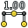

Guida ai comandi di FreeCAD
Ambiente Draft
Questo è la guida ai comandi di FreeCAD. Comprende le pagine del Wiki della documentazione di FreeCAD che si riferiscono ai comandi. Questa versione è stata creata principalmente per essere stampata come un unico grande documento o per consentire una panoramica veloce sulle pagine dei comandi. Se si sta leggendo questo online, si consiglia di andare direttamente alla Guida in linea, che è più facile da esplorare.
- Parte prima: Ambiente Draft
- Parte seconda: Ambiente Draft: Strumenti per disegnare gli oggetti
- Parte terza: Ambiente Draft: Strumenti per modificare gli oggetti
- Parte quarta: Ambiente Draft: Strumenti di utilità
- Parte quinta: Ambiente Draft: Altri strumenti e strumenti non documentati
L'ambiente Draft permette di disegnare in modo rapido e semplice degli oggetti 2D nel documento corrente, e offre diversi strumenti per manipolarli.
Alcuni di questi strumenti funzionano su tutti gli oggetti di FreeCAD, non solo su quelli creati con l'ambiente Draft.
Fornisce inoltre un sistema completo di ancoraggio, e diverse utility per gestire gli oggetti e le impostazioni.
Strumenti per disegnare oggetti
Questi sono gli strumenti per creare gli oggetti
-
 Linea: Disegna un segmento delimitato da due punti.
Linea: Disegna un segmento delimitato da due punti. -
 DWire: Disegna una spezzata o polilinea specificando tutti i punti intermedi.
DWire: Disegna una spezzata o polilinea specificando tutti i punti intermedi. -
 Cerchio: Disegna una circonferenza prendendo in input il centro e il raggio.
Cerchio: Disegna una circonferenza prendendo in input il centro e il raggio. -
 Arco: Disegna un arco di circonferenza a partire dal centro e specificando il raggio, l'angolo iniziale e l'angolo finale.
Arco: Disegna un arco di circonferenza a partire dal centro e specificando il raggio, l'angolo iniziale e l'angolo finale. -
 Ellisse: Disegna una ellisse.
Ellisse: Disegna una ellisse. -
 Poligono: Disegna un poligono regolare a partire da centro e raggio.
Poligono: Disegna un poligono regolare a partire da centro e raggio. -
 Rettangolo: Disegna un rettangolo specificando gli angoli opposti.
Rettangolo: Disegna un rettangolo specificando gli angoli opposti. - Testo: Disegna delle annotazioni multilinea.
-  Quota: Aggiunge la quotatura.
-
 B-Spline: Interpola una traiettoria curvilinea passante per i punti specificati.
B-Spline: Interpola una traiettoria curvilinea passante per i punti specificati. -
 Punto: Inserisce un oggetto punto.
Punto: Inserisce un oggetto punto. -
 ShapeString: inserisce una forma composta da una stringa di testo.
ShapeString: inserisce una forma composta da una stringa di testo. -
 Facebinder: crea un nuovo oggetto costituito dalle facce selezionate in una forma.
Facebinder: crea un nuovo oggetto costituito dalle facce selezionate in una forma. -
 Curva di Bezier: Disegna curve di Bezier su una serie di punti
Curva di Bezier: Disegna curve di Bezier su una serie di punti -
 Etichetta: Posiziona un'etichetta con una freccia che punta a un elemento selezionato disponibile dalla versione 0.17
Etichetta: Posiziona un'etichetta con una freccia che punta a un elemento selezionato disponibile dalla versione 0.17
Strumenti per modificare gli oggetti
Si tratta degli strumenti per la modifica di oggetti esistenti. Lavorano su oggetti selezionati precedentemente, quando nessun oggetto è selezionato, si viene invitati a scegliere uno.
-
 Sposta: Sposta un o più oggetti da una posizione a un'altra
Sposta: Sposta un o più oggetti da una posizione a un'altra -
 Ruota: Ruota uno o più oggetti da un angolo di partenza a un angolo finale
Ruota: Ruota uno o più oggetti da un angolo di partenza a un angolo finale -
 Scosta: Duplica e scosta in modo equidistante i componenti di un oggetto
Scosta: Duplica e scosta in modo equidistante i componenti di un oggetto -
 Taglia/Estendi: Accorcia o estende (estrude) l'oggetto selezionato
Taglia/Estendi: Accorcia o estende (estrude) l'oggetto selezionato -
 Assembla: Unisce gli oggetti in un oggetto di livello superiore
Assembla: Unisce gli oggetti in un oggetto di livello superiore -
 Scomponi: Scompone gli oggetti in oggetti di livello inferiore
Scomponi: Scompone gli oggetti in oggetti di livello inferiore -
 Scala: Scala gli oggetti in relazione a un punto base
Scala: Scala gli oggetti in relazione a un punto base -
 Disegno: Traspone gli oggetti in un Foglio di disegno
Disegno: Traspone gli oggetti in un Foglio di disegno -
 Modifica: Consente di modificare un oggetto
Modifica: Consente di modificare un oggetto -
 Da Wire a BSpline: Converte i segmenti di una linea spezzata (Wire) in curve di una linea BSpline e viceversa
Da Wire a BSpline: Converte i segmenti di una linea spezzata (Wire) in curve di una linea BSpline e viceversa -
 Aggiungi punto: Aggiunge un punto a una linea spezzata o a una BSpline
Aggiungi punto: Aggiunge un punto a una linea spezzata o a una BSpline -
 Elimina punto: Elimina un punto da una spezzata o da una BSpline
Elimina punto: Elimina un punto da una spezzata o da una BSpline -
 Vista 2D: Crea un oggetto 2D quale proiezione di un oggetto 3D
Vista 2D: Crea un oggetto 2D quale proiezione di un oggetto 3D -
 Da Draft a Schizzo: Converte un oggetto di Draft in un oggetto di Schizzo e viceversa
Da Draft a Schizzo: Converte un oggetto di Draft in un oggetto di Schizzo e viceversa -
 Schiera: Duplica e crea una schiera a matrice polare o rettangolare degli oggetti selezionati
Schiera: Duplica e crea una schiera a matrice polare o rettangolare degli oggetti selezionati - Path Array: Crea delle copie dell'oggetto selezionato distribuite su un percorso
-
 Clona: Clona gli oggetti selezionati
Clona: Clona gli oggetti selezionati -
 Simmetria: Riflette gli oggetti selezionati
Simmetria: Riflette gli oggetti selezionati -
 Stira: Stira gli oggetti selezionati disponibile dalla versione 0.17
Stira: Stira gli oggetti selezionati disponibile dalla versione 0.17
Strumenti di utilità
Ulteriori strumenti disponibili tramite il menu contestuale del tasto destro, a seconda degli oggetti selezionati.
-
 Piano di lavoro: Consente di impostare un piano di lavoro da una vista standard o da una faccia selezionata
Piano di lavoro: Consente di impostare un piano di lavoro da una vista standard o da una faccia selezionata -
 Termina: Termina il disegno della polilinea o della BSpline corrente senza chiuderla
Termina: Termina il disegno della polilinea o della BSpline corrente senza chiuderla -
 Chiudi: Termina il disegno della polilinea o della BSpline corrente chiudendola
Chiudi: Termina il disegno della polilinea o della BSpline corrente chiudendola -
 Annulla: Annulla l'ultimo segmento della linea
Annulla: Annulla l'ultimo segmento della linea -
 Modalità Costruzione: Attiva o disattiva la modalità "Disegno di Costruzione"
Modalità Costruzione: Attiva o disattiva la modalità "Disegno di Costruzione" -
 Modalità Continua: Attiva o disattiva la modalità "Continua con lo stesso strumento"
Modalità Continua: Attiva o disattiva la modalità "Continua con lo stesso strumento" -
 Applica stile: Applica lo stile e il colore attuale agli oggetti selezionati
Applica stile: Applica lo stile e il colore attuale agli oggetti selezionati -
 Visualizzazione: Commuta la modalità di visualizzazione degli oggetti selezionati da "flat lines" a "wireframe" (da facce a linee)
Visualizzazione: Commuta la modalità di visualizzazione degli oggetti selezionati da "flat lines" a "wireframe" (da facce a linee) -
 Aggiungi al gruppo: Aggiunge rapidamente gli oggetti selezionati a un gruppo esistente
Aggiungi al gruppo: Aggiunge rapidamente gli oggetti selezionati a un gruppo esistente -
 Seleziona il contenuto del gruppo: Seleziona il contenuto di un gruppo selezionato
Seleziona il contenuto del gruppo: Seleziona il contenuto di un gruppo selezionato -
 Aggancia: Attiva o disattiva la funzione di ancoraggio (snap) agli oggetti
Aggancia: Attiva o disattiva la funzione di ancoraggio (snap) agli oggetti -
 Griglia: Attiva o disattiva la griglia di Draft
Griglia: Attiva o disattiva la griglia di Draft -
 Barra di snap: Mostra o nasconde la barra degli strumenti di ancoraggio di Draft
Barra di snap: Mostra o nasconde la barra degli strumenti di ancoraggio di Draft -
 Heal: Risolve i problemi individuati negli oggetti di Draft in file molto vecchi
Heal: Risolve i problemi individuati negli oggetti di Draft in file molto vecchi -
 Flip Dimension: Inverte l'orientamento del testo di una dimensione
Flip Dimension: Inverte l'orientamento del testo di una dimensione -
 VisGruppo: Crea nel documento corrente un gruppo di elementi con le stesse proprietà Vista
VisGruppo: Crea nel documento corrente un gruppo di elementi con le stesse proprietà Vista -
 Pendenza: Cambia l'inclinazione di linee o polilinee selezionate disponibile dalla versione 0.17
Pendenza: Cambia l'inclinazione di linee o polilinee selezionate disponibile dalla versione 0.17
-
 AutoGruppo: Posiziona automaticamente i nuovi oggetti in un determinato gruppo disponibile dalla versione 0.17
AutoGruppo: Posiziona automaticamente i nuovi oggetti in un determinato gruppo disponibile dalla versione 0.17
-
 Piano Proxy: Aggiunge un oggetto proxy nel documento per memorizzare la posizione di un Piano di lavoro disponibile dalla versione 0.17
Piano Proxy: Aggiunge un oggetto proxy nel documento per memorizzare la posizione di un Piano di lavoro disponibile dalla versione 0.17
- Aggiungi al gruppo Costruzione: Aggiunge l'oggetto selezionato al gruppo Costruzione disponibile dalla versione 0.17
Preferenze
-
 Preferenze...: Preferenze disponibili negli strumenti Draft.
Preferenze...: Preferenze disponibili negli strumenti Draft.
Formato dei file
Il modulo Draft fornisce a FreeCAD gli importatori e gli esportatori per i seguenti formati di file:
-
 Preference ... Import Export
Preference ... Import Export
- Autodesk .DXF: Importa ed esporta file Drawing Exchange Format creati con applicazioni CAD 2D
- SVG (come geometria): Importa ed esporta file Scalable Vector Graphics creati con applicazioni di grafica vettoriale
- Open Cad format .OCA: Importa ed esporta file OCA/GCAD, potenzialmente un nuovo formato di file open CAD
- Airfoil Data Format .DAT: Importa file DAT che descrivono profili aerodinamici portanti
- Autodesk .DWG: Importa e esporta file DWG tramite l'importatore DXF quando l'utility Teigha Converter è installata.
- FreeCAD e importare DWG: Importa e esporta file DWG
- FreeCAD e importare DXF: Importa e esporta file DXF
Ulteriori funzioni
- Ancorare (Snap): Permette di inserire nuovi punti in posizioni particolari su oggetti esistenti.
- Vincolare: Permette di inserire nuovi punti correlati (vincolati) orizzontalmente o verticalmente a punti precedenti.
- Digitare le coordinate: Permette di inserire le coordinate da tastiera invece di cliccare sullo schermo
- Modalità Costruzione: Permette di raggruppare delle geometrie in un blocco definito 'Costruzione' per nasconderle o visualizzarle contemporaneamente, in modo semplice, tramite l'interruttore on/off
- Piano di lavoro: Consente di definire un piano nello spazio 3D dove eseguire le successive operazioni
API
Il modulo Draft incorpora una Draft API completa perciò si può utilizzare le sue funzioni negli script e nelle macro
Tutorial
Ambiente Draft: Strumenti per disegnare gli oggetti
Crea un segmento tra due punti nel piano di lavoro corrente. Il segmento assume il tipo di linea e il colore impostati in precedenza nella Barra dei comandi e modificabili tramite la stessa o nella scheda Vista combinata → Proprietà → Vista. Lo strumento Linea si comporta esattamente come lo strumento DWire di Draft, tranne che si disattiva dopo che sono stati definiti due punti.

Utilizzo
- Premere il pulsante
 Linea o premere i tasti L e I
Linea o premere i tasti L e I - Fare clic su un primo punto nella vista 3D, o digitare le sue coordinate
- Fare clic su un secondo punto nella vista 3D, o digitare le sue coordinate
Opzioni
- Premere X, Y o Z e muovere il puntatore nell'area grafica dopo il primo punto per vincolare il secondo punto su uno specifico asse. In questo caso rimane attivo solo il campo corrispondente all'asse selezionato e in esso è mostrata la posizione corrente del cursore.
- Per inserire le coordinate manualmente, è sufficiente inserire il loro valore, poi premere INVIO per ogni componente X, Y e Z. In questo caso è bene tenere il puntatore del mouse fuori dall'area di lavoro in quanto un suo movimento accidentale cattura e inserisce nel campo di input le coordinate a cui si trova e costringe a ripetere l'inserimento.
- Premere R oppure fare clic sulla casella di controllo per selezionare o deselezionare la modalità Relativo. In modalità Relativo, le coordinate del secondo punto sono relative al primo. In caso contrario, sono assolute, a partire dal punto di origine (0,0,0).
- Premere T oppure fare clic sulla casella di controllo per selezionare o deselezionare la modalità Continua. In modalità Continua, al termine dell'operazione, lo strumento Linea si riavvia automaticamente e permette di disegnare un nuovo segmento senza dover ripetere il comando. I diversi segmenti costruiti in questo modo sono oggetti indipendenti, a differenza di quelli costruiti con DWire che sono invece parte di una unica polilinea.
- Premere CTRL mentre si disegna per ancorare il proprio punto al punto agganciabile più vicino, indipendentemente dalla distanza.
- Premere SHIFT mentre si disegna per vincolare orizzontalmente o verticalmente il secondo punto rispetto al primo.
- Premere CTRL+Z o premere il pulsante Annulla per annullare l'ultimo punto inserito. Questa opzione permette di annullare a ritroso tutti punti inseriti.
- Premere ESC o premere il pulsante Cancella per uscire dal comando Linea attivo.
- Se sono selezionate diverse Linee Draft connesse, esse possono essere trasformate in una unica polilinea premendo il pulsante Promuovi.
Proprietà
Vista
Sono disponibili le Proprietà standard di visualizzazione.
Dati

|
2D
Draft
|
Script
Lo strumento Linea può essere utilizzato nelle macro e dalla console di Python tramite la seguente funzione:
makeLine (Vector, Vector)
- Crea una linea tra i due vettori dati.
- Sono usati il tipo di linea e il colore correnti.
- Viene creato un nuovo oggetto.
Esempio:
import FreeCAD, Draft Draft.makeLine(FreeCAD.Vector(0,0,0),FreeCAD.Vector(2,0,0))
|
| Posizione nel menu |
|---|
| Draft → Polilinea |
| Ambiente |
| Draft, Architettura |
| Avvio veloce |
| W I |
| Vedere anche |
| Draft → Linea, Draft → BSpline |
Crea una polilinea (sequenza di segmenti) nel piano di lavoro corrente. La polilinea assume il tipo di linea e il colore impostati in precedenza nella Barra dei comandi e modificabili tramite la stessa o nella scheda Vista combinata → Proprietà → Vista. Lo strumento DWire si comporta come lo strumento Linea, con la differenza che non termina dopo due soli punti e i segmenti sono parti di un unico oggetto.

Utilizzo
- Premere il pulsante DWire, o premere i tasti W e I
- Selezionare il primo punto nella vista 3D, o digitare le coordinate
- Selezionare un punto successivo nella vista 3D, o digitare le coordinate
- Premere F o C, o fare doppio clic sull'ultimo punto, oppure fare clic sul primo punto per completare o chiudere il contorno. Un contorno chiuso è anche una faccia, anche se appare solo il suo bordo.
Opzioni
- Se sono selezionate diverse Linee Draft connesse, quando si preme il pulsante Draft Wire esse vengono trasformate in una polilinea e si esce dal comando. available in version 0.17
- Premere F o il pulsante
 Termina per interrompere il disegno del contorno, lasciandolo aperto
Termina per interrompere il disegno del contorno, lasciandolo aperto - Premere C o il pulsante
 Chiudi o selezionare il primo punto per chiudere il contorno collegando l'ultimo punto con il primo.
Chiudi o selezionare il primo punto per chiudere il contorno collegando l'ultimo punto con il primo. - Premere X, Y o Z e muovere il puntatore nell'area grafica dopo il primo punto per vincolare il secondo punto su uno specifico asse. In questo caso rimane attivo solo il campo corrispondente all'asse selezionato e in esso è mostrata la posizione corrente del cursore.
- Per inserire le coordinate manualmente, è sufficiente inserire il loro valore, poi premere INVIO per ogni componente X, Y e Z. E' bene tenere il puntatore del mouse fuori dall'area di lavoro in quanto un suo movimento accidentale cattura e inserisce nel campo di input le coordinate a cui si trova e costringe a ripetere l'inserimento.
- Premere R oppure fare clic sulla casella di controllo per selezionare o deselezionare la modalità Relativo. In modalità Relativo, le coordinate del secondo punto sono relative al primo. In caso contrario, sono assolute, a partire dal punto di origine (0,0,0).
- Premere T oppure fare clic sulla casella di controllo per selezionare o deselezionare la modalità Continua. In modalità Continua, al termine dell'operazione, lo strumento DWire si riavvia automaticamente e permette di disegnare una nuova polilinea senza dover ripetere il comando.
- Premere CTRL mentre si disegna per ancorare il proprio punto al punto agganciabile più vicino, indipendentemente dalla distanza.
- Premere SHIFT mentre si disegna per vincolare orizzontalmente o verticalmente il secondo punto rispetto al primo.
- Premere W o il pulsante Pulisci per rimuovere i segmenti esistenti e avviare la polilinea dall'ultimo punto.
- Premere CTRL+Z o premere il pulsante
 Annulla per annullare l'ultimo punto inserito. Questa opzione permette di annullare a ritroso tutti i punti di una Spezzata.
Annulla per annullare l'ultimo punto inserito. Questa opzione permette di annullare a ritroso tutti i punti di una Spezzata. - Premere ilo tasto I o il pulsante Pieno per far apparire il contorno come una faccia se è stato chiuso.
- Premere ESC o premere il pulsante Cancella per uscire dal comando DWire attivo.
- Un contorno chiuso, quando è rappresentato in modalità "Flat Lines", può contenere un tratteggio, impostando le sue proprietà "Pattern" sottostanti.
Proprietà
- DatiClosed: Specifica se il contorno è chiuso.
- DatiChamfer Size : Stabilisce lo smusso dei vertici di una spezzata.
- DatiFillet Radius: Specifica un raggio di curvatura di dare ai vertici della polilinea
- DATASubdivisions: Divide i segmenti del poligono in un dato numero di suddivisioni available in version 0.16
- DATAMake Face: Riempie il contorno con una faccia se è chiuso
- VistaEnd Arrow: Mostra un simbolo di freccia nell'ultimo punto del contorno, in modo che possa essere utilizzato come linea guida di annotazione
- VistaPattern: specifica un modello di tratteggio per riempire la polilinea
- VistaPattern Size: Specifica la dimensione del tratteggio
Vedere anche la pagina Draft Pattern.
Script
Lo strumento DWire può essere utilizzato nelle macro e dalla console di Python tramite la seguente funzione:
makeWire (list or Part.Wire, [closed], [placement], [facemode])
- Crea un oggetto Wire (polilinea) dall'elenco dei vettori dati o dalla polilinea data.
- Se closed è True o se il primo e l'ultimo punto sono identici, il contorno è chiuso.
- Se facemode è True (quindi il contorno è chiuso), il contorno appare riempito.
- Sono usati la larghezza di linea e il colore correnti.
- Restituisce l'oggetto appena creato.
Esempio:
import FreeCAD,Draft p1 = FreeCAD.Vector(0,0,0) p2 = FreeCAD.Vector(1,1,0) p3 = FreeCAD.Vector(2,0,0) Draft.makeWire([p1,p2,p3],closed=True)
|
| Posizione nel menu |
|---|
| Draft → Cerchio |
| Ambiente |
| Draft, Architettura |
| Avvio veloce |
| C I |
| Vedere anche |
| Arco |
Crea una circonferenza nel corrente piano di lavoro, inserendo due punti, il centro e il raggio, oppure selezionando le tangenti, oppure con qualsiasi combinazione di questi elementi. La circonferenza assume il tipo di linea e il colore impostati in precedenza nella Barra dei comandi e modificabili tramite la stessa o nella scheda Vista combinata → Proprietà → Vista. Questo strumento funziona allo stesso modo dello strumento Arco di Draft, tranne che termina dopo l'inserimento del raggio.

Utilizzo
- Premere il pulsante
 Cerchio, o premere i tasti C e I
Cerchio, o premere i tasti C e I - Selezionare un primo punto nella vista 3D per stabilire il centro, oppure digitare le sue coordinate
- Selezionare un secondo punto nella vista 3D, o introdurre il valore del raggio.
Opzioni
- L'uso prevalente dello strumento cerchio avviene selezionando due punti: il centro e un punto sulla circonferenza per definire il raggio.
- Premere il tasto ALT per selezionare una tangente invece di utilizzare un punto. E' possibile costruire i cerchi in diversi modi, selezionando una, due o tre tangenti.
- Per inserire le coordinate manualmente, è sufficiente inserire il loro valore, poi premere INVIO per ogni componente X, Y e Z. È bene tenere il puntatore del mouse fuori dall'area di lavoro in quanto un suo movimento accidentale cattura e inserisce nel campo di input le coordinate a cui si trova e costringe a ripetere l'inserimento.
- Premere T oppure fare clic sulla casella di controllo per selezionare o deselezionare la modalità Continua. In modalità Continua, al termine dell'operazione, lo strumento Cerchio si riavvia automaticamente e permette di disegnare una nuova circonferenza senza dover ripetere il comando.
- Premere CTRL mentre si disegna per ancorare il proprio punto al punto agganciabile più vicino, indipendentemente dalla distanza.
- Premere SHIFT mentre si disegna per vincolare orizzontalmente o verticalmente il secondo punto rispetto al primo.
- Premere I o il pulsante Pieno per far apparire la circonferenza come una faccia dopo.
- Premere ESC o premere il pulsante Cancella per uscire dal comando attivo.
- La circonferenza può essere trasformata in un arco anche dopo la sua creazione, impostando le proprietà del primo e dell'ultimo angolo a valori diversi.
- Circles, when in "Flat Lines" display mode, can display a hatch pattern, by setting their "Pattern" property below.
Proprietà
Vista
Sono disponibili le Proprietà standard di visualizzazione.
- VistaPattern: Specifica un modello di tratteggio con cui riempire la sagoma
- VistaPattern Size: Specifica la dimensione del modello di tratteggio
Dati
|
2D
Draft
|
Vedere anche la pagina Draft Pattern.
Script
Lo strumento Cerchio può essere utilizzato nelle macro e dalla console di Python tramite la seguente funzione:
makeCircle (radius, [placement], [facemode], [startangle], [endangle])
- Crea un oggetto cerchio con raggio dato.
- Se si indica un posizionamento (placement), esso viene utilizzato.
- Se facemode è False, il cerchio viene visualizzato come reticolo, altrimenti come una faccia.
- Se si indicano un angolo iniziale (startangle) e un angolo finale (endangle), in gradi, essi vengono utilizzati e l'oggetto appare come un arco.
- Restituisce l'oggetto appena creato.
Esempio:
import Draft myCircle = Draft.makeCircle(2)
|
| Posizione nel menu |
|---|
| Draft → Arco |
| Ambiente |
| Draft, Architettura |
| Avvio veloce |
| A R |
| Vedere anche |
| Circonferenza |
Crea un arco nel piano di lavoro. Si può definire l'arco inserendo quattro punti, il centro, il raggio, il primo punto e l'ultimo punto, oppure selezionando le tangenti, oppure con qualsiasi combinazione di questi elementi. L'arco assume il tipo di linea e il colore impostati in precedenza nella Barra dei comandi e modificabili tramite la stessa o nella scheda Vista combinata → Proprietà → Vista. Questo strumento funziona allo stesso modo dello strumento Cerchio di Draft, ma aggiunge l'angolo iniziale e l'angolo finale.

Utilizzo
- Premere il pulsante
 Arco, o premere i tasti A e R
Arco, o premere i tasti A e R - Selezionare un primo punto nella vista 3D per stabilire il centro, oppure digitare le sue coordinate
- Selezionare un secondo punto nella vista 3D, o introdurre il valore del raggio.
- Selezionare un terzo punto nella vista 3D, o introdurre l'angolo iniziale
- Selezionare un quarto punto nella vista 3D, o introdurre l'angolo finale
Opzioni
- L'uso prevalente dello strumento cerchio avviene selezionando quattro punti: il centro, un punto sulla circonferenza, definendo il raggio, un terzo punto per definire l'inizio dell'arco, ed un quarto per definire la sua fine.
- Premere il tasto ALT per definire il cerchio base con la selezione di una tangente invece di utilizzare un punto. È possibile costruire i cerchi in diversi modi, selezionando una, due o tre tangenti.
- La direzione dell'arco dipende dal movimento che si esegue con il mouse. Se si inizia a muoverlo in senso orario dopo che il terzo punto è stato inserito, l'arco avrà un verso orario. Per andare in senso antiorario, è sufficiente spostare il mouse in verso contrario oltre il terzo punto, fino a quando l'arco comincia a disegnarsi nella direzione opposta.
- Per inserire le coordinate manualmente, è sufficiente inserire il loro valore, poi premere INVIO per ogni componente X, Y e Z. È bene tenere il puntatore del mouse fuori dall'area di lavoro in quanto un suo movimento accidentale cattura e inserisce nel campo di input le coordinate a cui si trova e costringe a ripetere l'inserimento.
- Premere T oppure fare clic sulla casella di controllo per attivare o disattivare la modalità Continua. In modalità Continua lo strumento Arco si riavvia automaticamente dopo l'inserimento del quarto punto e permette di disegnare altri archi senza dover ripetere il comando.
- Premere CTRL mentre si disegna per ancorare il proprio punto al punto agganciabile più vicino, indipendentemente dalla distanza.
- Premere SHIFT mentre si disegna per vincolare il secondo punto orizzontalmente o verticalmente rispetto al centro.
- Premere ESC o premere il pulsante Cancella per uscire dal comando attivo.
- L'arco può essere trasformato in un cerchio anche dopo la sua creazione, impostando il valore del suo angolo iniziale pari al valore del suo angolo finale.
Proprietà
Vista
Sono disponibili le Proprietà standard di visualizzazione.
Dati
 |
2D
Draft
|
Script
Lo strumento Cerchio può anche essere utilizzato per creare archi nelle macro e dalla console di Python tramite la seguente funzione, dandogli gli argomenti aggiuntivi:
makeCircle (radius, [placement], [facemode], [startangle], [endangle])
- Crea un oggetto cerchio con raggio dato.
- Se si indica un posizionamento, esso viene utilizzato.
- Se facemode è False, il cerchio viene visualizzato come una linea, altrimenti come una faccia.
- Se si indicano un angolo iniziale e un angolo finale (in gradi), essi vengono utilizzati e l'oggetto appare come un arco.
- Restituisce l'oggetto appena creato.
Esempio:
import Draft myArc = Draft.makeCircle(2,startangle=0,endangle=90)
|
| Posizione nel menu |
|---|
| Draft → Ellisse |
| Ambiente |
| Draft, Architettura |
| Avvio veloce |
| E L |
| Vedere anche |
| Circonferenza |
Descrizione
Crea nel corrente piano di lavoro una ellisse inscritta in un rettangolo. Per definire il rettangolo di contenimento inserire due punti di vertice opposti. La linea assume il tipo di linea e il colore impostati in precedenza nella Barra dei comandi e modificabili tramite la stessa o nella scheda Vista combinata → Proprietà → Vista.

Utilizzo
- Premere il pulsante
 Ellisse, o premere i tasti E e L
Ellisse, o premere i tasti E e L - Nella vista 3D selezionare un primo punto vertice del rettangolo di contenimento oppure digitare le sue coordinate
- Selezionare il punto del vertice opposto nella vista 3D, o digitare le sue coordinate
Opzioni
- Per inserire le coordinate manualmente, è sufficiente inserire il numero, quindi premere INVIO per ogni componente X, Y e Z. È bene tenere il puntatore del mouse fuori dall'area di lavoro in quanto un suo movimento accidentale cattura e inserisce nel campo di input le coordinate a cui si trova e costringe a ripetere l'inserimento.
- Premere T oppure fare clic sulla casella di controllo per selezionare o deselezionare la modalità Continua. In modalità Continua, al termine dell'operazione, lo strumento Ellisse si riavvia automaticamente e permette di disegnare un nuovo ellisse senza dover ripetere il comando.
- Premere CTRL mentre si disegna per ancorare il proprio punto al punto agganciabile più vicino, indipendentemente dalla distanza.
- Premere SHIFT mentre si disegna per vincolare orizzontalmente o verticalmente il secondo punto rispetto al primo.
- Premere I o il pulsante Pieno per far apparire l'ellisse come una faccia dopo che è stato chiuso
- Premere R oppure fare clic sulla casella di controllo per selezionare o deselezionare la modalità Relativo. In modalità Relativo, le coordinate del secondo punto sono relative al primo. In caso contrario, sono assolute, a partire dal punto di origine (0,0,0).
- Premere ESC o premere il pulsante Cancella per uscire dal comando attivo.
Proprietà
- DatiMajor Radius: il raggio minore dell'ellisse
- DatiMinor Radius: il raggio maggiore dell'ellisse
- DATAMake Face: riempie l'ellisse con una faccia
- DatiPattern: specifica un modello di tratteggio per riempire l'ellisse
- DatiPattern Size: Specifica la dimensione del tratteggio
Vedere anche la pagina Draft Pattern.
Script
Lo strumento Ellisse può essere utilizzato nelle macro e dalla console di Python tramite la seguente funzione:
makeEllipse (majorradius, minorradius, [placement], [facemode])
- Crea un oggetto ellisse raggio maggiore e minore dati.
- Se viena dato un placement, esso viene usato.
- Se facemode è False, l'ellisse è mostrato come un wireframe, altrimenti come una faccia.
- Restituisce l'oggetto appena creato.
Esempio:
import Draft myEllipse = Draft.makeEllipse(4,2)
|
| Posizione nel menu |
|---|
| Draft → Poligono |
| Ambiente |
| Draft, Architettura |
| Avvio veloce |
| P G |
| Vedere anche |
| Nessuno |
Crea un poligono regolare a partire da due punti, il centro e un secondo punto che definisce un raggio. È possibile specificare il numero di lati. Viene creato un poligono regolare inscritto nel cerchio di cui si è dato il raggio. Il numero di lati e la condizione di inscritto o circoscritto sono modificabili in qualsiasi momento in Vista combinata → Proprietà → Dati → Draw Mode. Il poligono assume il tipo di linea e il colore impostati in precedenza nella Barra dei comandi e modificabili tramite la stessa o nella scheda Vista combinata → Proprietà → Vista.
Utilizzo
- Premere il pulsante
 Poligono, o premere i tasti P e G,
Poligono, o premere i tasti P e G, - Selezionare il primo punto nella vista 3D, per stabilire il centro, oppure digitare le sue coordinate ,
- Impostare il numero di lati desiderato nella finestra delle Opzioni del comando attivo,
- Selezionare un altro punto della vista 3D, o digitare un valore per definire il raggio del poligono. Il poligono è anche una faccia, nonostante appaia come reticolo.
Opzioni
- Per inserire le coordinate manualmente, è sufficiente inserire il loro valore, poi premere INVIO per ogni componente X, Y e Z. È bene tenere il puntatore del mouse fuori dall'area di lavoro in quanto un suo movimento accidentale cattura e inserisce nel campo di input le coordinate a cui si trova e costringe a ripetere l'inserimento.
- Premere T oppure fare clic sulla casella di controllo per selezionare o deselezionare la modalità Continua. In modalità Continua, al termine dell'operazione, lo strumento Poligono si riavvia automaticamente e permette di disegnare un nuovo poligono senza dover ripetere il comando.
- Premere CTRL mentre si disegna per ancorare il proprio punto al punto agganciabile più vicino, indipendentemente dalla distanza.
- Premere SHIFT mentre si disegna per vincolare orizzontalmente o verticalmente il secondo punto rispetto al primo.
- Premere I o il pulsante Pieno per far apparire il poligono come una faccia dopo che è stato chiuso.
- Premere ESC o premere il pulsante Cancella per uscire dal comando attivo.
- Quando il poligono è visualizzato in modalità "Flat Lines" può essere riempito con un tratteggio specificando le proprietà "Pattern".
Proprietà
Vista
Sono disponibili le Proprietà standard di visualizzazione.
- VistaPattern: Specifica un tratteggio con cui riempire il cerchio
- VistaPattern Size: Specifica la dimensione del tratteggio
Dati
|
2D
Draft
|
Vedere anche la pagina Draft Pattern.
Script
Lo strumento Poligono può essere utilizzato nelle macro e dalla console di Python tramite la seguente funzione:
makePolygon(nfaces,[radius],[inscribed],[placement],[face])
- La funzione crea un oggetto poligono con il numero di lati e il raggio indicati.
- Se inscribed è False, il poligono è circoscritto al cerchio di raggio dato, altrimenti è inscritto.
- Se face è True, la forma risultante viene visualizzata come una faccia, altrimenti come un reticolo.
- Restituisce l'oggetto appena creato.
Esempio:
import Draft Draft.makePolygon(5,radius=3)
|
| Posizione nel menu |
|---|
| Draft → Rettangolo |
| Ambiente |
| Draft, Architettura |
| Avvio veloce |
| R E |
| Vedere anche |
| Cubo |
Crea un rettangolo dalla selezione di due punti opposti, sulla diagonale. Il rettangolo assume il tipo di linea e il colore impostati in precedenza nella Barra dei comandi e modificabili tramite la stessa o nella scheda Vista combinata → Proprietà → Vista.

Utilizzo
- Premere il pulsante
 Rettangolo, o premere i tasti R e E
Rettangolo, o premere i tasti R e E - Selezionare un primo punto nella vista 3D per stabilire il primo vertice,, oppure digitare le sue coordinate
- Selezionare il punto opposto nella vista 3D, oppure digitare le sue coordinate . Il rettangolo è anche una faccia, nonostante appaia come reticolo.
Opzioni
- Premere X, Y o Z dopo il primo punto per vincolare il secondo punto sul corrispondente asse.
- Per inserire le coordinate manualmente, è sufficiente inserire il numero, quindi premere INVIO per ogni componente X, Y e Z. È bene tenere il puntatore del mouse fuori dall'area di lavoro in quanto un suo movimento accidentale cattura e inserisce nel campo di input le coordinate a cui si trova e costringe a ripetere l'inserimento.
- Premere R oppure fare clic sulla casella di controllo per selezionare o deselezionare la modalità Relativo. In modalità Relativo, le coordinate del secondo punto sono relative al primo. In caso contrario, sono assolute, a partire dal punto di origine (0,0,0).
- Premere T oppure fare clic sulla casella di controllo per selezionare o deselezionare la modalità Continua. In modalità Continua, al termine dell'operazione, lo strumento Rettangolo si riavvia automaticamente e permette di disegnare un nuovo rettangolo senza dover ripetere il comando.
- Premere CTRL mentre si disegna per ancorare il proprio punto al punto agganciabile più vicino, indipendentemente dalla distanza.
- Premere SHIFT mentre si disegna per vincolare orizzontalmente o verticalmente il secondo punto rispetto al primo.
- Premere I o il pulsante Pieno per far apparire il rettangolo come una faccia dopo che è stato chiuso.
- Premere ESC o premere il pulsante Cancella per uscire dal comando attivo.
- Quando il rettangolo è visualizzato in "Flat Lines" può essere riempito con una trama impostando le sue proprietà "Pattern".
Proprietà
Vista
Sono disponibili le Proprietà standard di visualizzazione.
- VistaTexture Image: Permette di indicare il percorso di un file di immagine da mappare sul rettangolo. Per evitare distorsioni, il rettangolo deve avere la stessa proporzione dell'immagine. Svuotando questa proprietà l'immagine viene rimossa.
- VistaPattern: Specifica il modello di tratteggio da usare per riempire la figura.
- VistaPattern Size: Specifica la dimensione del modello di tratteggio
Dati
|
2D
Draft
|
Vedere anche la pagina Campitura.
Script
Lo strumento Rettangolo può essere utilizzato nelle macro e dalla console di Python tramite la seguente funzione:
makeRectangle (length, width, [placement], [facemode])
- La funzione crea un oggetto rettangolo con la lunghezza in direzione X e la larghezza in direzione Y.
- Se si indica una posizione, essa viene utilizzata.
- Se facemode è False, il rettangolo viene visualizzato come reticolo, altrimenti come una faccia.
- Sono utilizzati il tipo di linea e il colore attivi di Draft.
- Restituisce l'oggetto appena creato.
Esempio:
import FreeCAD,Draft Draft.makeRectangle(10,4)
Testo |
| Posizione nel menu |
|---|
| Draft → Testo |
| Ambiente |
| Draft, Architettura |
| Avvio veloce |
| T E |
| Vedere anche |
| Nessuno |
Inserisce un blocco di testo in un determinato punto del documento corrente. Il testo assume il tipo di linea e il colore impostati in precedenza nella Barra dei comandi e modificabili tramite la stessa o nella scheda Vista combinata → Proprietà → Vista.

Utilizzo
- Premere il pulsante
 Testo, o premere i tasti T e E
Testo, o premere i tasti T e E - Selezionare un punto nella vista 3D, per definire un punto base, oppure digitare le sue coordinate
- Inserire il testo desiderato, premendo INVIO per andare a capo
- Premere due volte INVIO (lasciando l'ultima riga vuota) per aggiungere il testo al documento e terminare l'operazione.
Opzioni
- Premere CTRL mentre si disegna per ancorare il proprio punto al punto agganciabile più vicino, indipendentemente dalla distanza.
- Per inserire manualmente le coordinate, è sufficiente inserire il loro valore, poi premere INVIO per ogni componente X, Y e Z. È bene tenere il puntatore del mouse fuori dall'area di lavoro in quanto un suo movimento accidentale cattura e inserisce nel campo di input le coordinate a cui si trova e costringe a ripetere l'inserimento.
- Premere ESC per uscire dal comando attivo.
- Quando si edita il testo, la pressione su INVIO o su Freccia Giù consente di editare una nuova riga di testo.
- Premere Freccia Sù per editare una linea di testo precedente.
- Preme due volte INVIO (lasciando l'ultima riga vuota) per aggiungere il testo al documento e chiudere l'editor.
- Diversi parametri, come ad esempio, il tipo di carattere e la sua dimensione, possono essere modificati nelle proprietà dell'oggetto, mentre le impostazioni di default possono essere definite nelle preferenze.
Proprietà
Dati

|
Base
|
Vista

|
Base
|
Script
Lo strumento Testo può essere utilizzato nelle macro e dalla console di Python utilizzando la seguente funzione:
makeText (string or list, [Vector], [screenmode])
- Crea un oggetto di testo, nel punto dato, se viene fornito un vettore, che contiene la stringa o le stringhe riportate nell'elenco, una stringa per riga.
- Il testo assume il colore, l'altezza e il tipo di carattere impostati in precedenza nella Barra dei comandi.
- Se screenmode è True, il testo è sempre rivolto nella direzione della vista, altrimenti si trova sul piano XY.
- Restituisce l'oggetto appena creato.
Esempio:
import FreeCAD,Draft
Draft.makeText("This is a sample text",FreeCAD.Vector(1,1,0))
Quota |
| Posizione nel menu |
|---|
| Draft → Quota |
| Ambiente |
| Draft, Architettura |
| Avvio veloce |
| DI |
| Vedere anche |
| Flip Dimension |
Descrizione
Crea una quotatura nel documento corrente tramite due punti che definiscono la distanza da misurare, e un terzo punto che specifica dove passa la linea di quota.

Utilizzo
- Premere il pulsante
 Quota, o premere i tasti D e I
Quota, o premere i tasti D e I - Selezionare un primo punto nella vista 3D oppure digitare le sue coordinate
- Selezionare un secondo punto della vista 3D, o digitare le sue coordinate
- Selezionare un terzo punto della vista 3D, o digitare le sue coordinate
- Premere il tasto CTRL per selezionare un punto di ancoraggio.
- Premere il tasto SHIFT per ottenere un vincolo orizzontale o verticale,
- 1 : selezionare il primo punto,
- 2 : orientare la linea di quota (orizzontalmente o verticalmente),
- 3 : premere il tasto SHIFT
- 4 : selezionare il secondo punto,
- 5 : rilasciare SHIFT,
- 6 : posizionare la linea di quota, poi cliccare sul pulsante destro del mouse (che stabilisce il terzo punto).
- Premere il tasto SHIFT per commutare tra il modo diametro e il modo raggio quando si opera su un bordo curvo.
- Inserire un valore per stabilire manualmente una coordinata.
- Premere il tasto ALT, quindi selezionare un bordo esistente, la quota ricorderà a quale bordo è vincolata.
- Se in seguito il punto finale di questo bordo viene spostato, la dimensione lo segue. Ciò vale anche per le dimensioni del raggio e del diametro.
- L'icona mostrata nella Vista combinata → Progetto → Etichette & Attributi dell'applicazione corrispondente, viene visualizzata in questo modo:

- Premere il tasto ESC o premere il pulsante Cancella per annullare l'operazione o per uscire dal comando.
- La casella di controllo Continua della barra del comando attivo, permette di disegnare più dimensioni su una sola linea.
- Procedura:
- Scegliere due punti su un'area vuota della vista 3D, o su un oggetto esistente, poi un terzo punto, per dare la posizione della linea di quota (come in una quotatura semplice), poi,
- definire tutti gli altri punti che devono essere quotati,
- infine, premere il tasto ESC per convalidare, e uscire dalla funzione.
Tipi di quotature disponibili
- Quota lineare: selezionare 2 punti qualsiasi o qualsiasi bordo dritto con il tasto ALT premuto.
- Quotatura continua: descritta nella sezione Utilizzo.
- Dimensione orizzontale o verticale: premere SHIFT fino a quando viene selezionato il secondo punto.
- Diametro: selezionare un bordo curvo con il tasto ALT premuto.
- Raggio: selezionare un bordo curvo con il tasto ALT premuto e successivamente premere SHIFT.
- Dimensione angolare: selezionare due bordi dritti con il tasto ALT premuto.
L'icona mostrata nella Vista combinata → Progetto → Etichette & Attributi dell'applicazione corrispondente, viene visualizzata in questo modo:
Opzioni
- Premere X, Y o Z dopo un punto per vincolare il punto successivo al dato asse.
- Per inserire manualmente le coordinate, è sufficiente inserire il numero, quindi premere INVIO per ogni componente X, Y e Z.
- Premere CTRL mentre si disegna per agganciare forzatamente il proprio punto al punto di ancoraggio più vicino, indipendentemente dalla distanza.
- Premere SHIFT per vincolare la dimensione orizzontalmente o verticalmente, o, quando si lavora su un bordo circolare, per passare dal diametro al raggio.
- Premere R oppure fare clic sulla casella di controllo per selezionare o deselezionare la modalità Relativo. Se la modalità Relativo è attiva, le coordinate del punto successivo sono relative al precedente. In caso contrario, sono assolute, a partire dal punto di origine (0,0,0).
- Premere T oppure fare clic sulla casella di controllo per selezionare o deselezionare la modalità Continua. Se la modalità Continua è attiva, è possibile disegnare quote continue, una dopo l'altra, che condividono la stessa linea base.
- Premere ESC o premere il pulsante Cancella per uscire dal comando attivo.
- Selezionando un bordo esistente con ALT, invece di inserire punti di misura, la dimensione diventa parametrica e si ricorda a quale lato è vincolata. Se successivamente i punti finali del bordo vengono spostati, la quota li segue.
- Se si seleziona un bordo prima di avviare il comando Dimensione, anche la dimensione creata sarà parametrica.
- La direzione della dimensione può essere modificata, modificando la proprietà "Direction"
Proprietà
- DATIStart: Il punto iniziale della distanza da misurare
- DATIEnd: Il punto finale della distanza da misurare
- DATIDimline: Un punto attraverso il quale deve passare la linea di quota
- VISTADisplay Mode: Specifica se il testo della quotatura è allineato con la linea di quota oppure è frontale alla fotocamera
- VISTAFont Size: La dimensione dei caratteri
- VISTAExt Lines: Le dimensioni delle linee di estensione (tra i punti di misurazione e la linea di quota).
- VISTAText Position: Serve per forzare la posizione del testo da visualizzare
- VISTAText Spacing: Specifica lo spazio tra il testo e la linea di quota
- VISTAOverride: Specifica il testo da visualizzare al posto della, o con la quota. Utilizzare il codice $dim (minuscolo) (dim rappresenta la posizione della dimensione) nel testo per visualizzare la quota.
- VISTAFont Name: Il tipo di carattere da utilizzare per disegnare il testo. Può essere un nome di carattere, ad esempio "Arial", uno stile predefinito come "sans", "serif" o "mono", o una famiglia, ad esempio "Arial, Helvetica, sans" o un nome con uno stile come "Arial:Bold". Se il font richiesto non viene trovato nel sistema, in sostituzione, ne viene usato uno generico. Il tipo di carattere e l'altezza del testo di default possono essere stabiliti in Modifica → Preferenze → Draft → Generale → Caratteri
- VISTAArrow Type: Il tipo di simbolo terminale da utilizzare
- VISTAArrow Size: La dimensione dei simboli terminali
- VISTADecimals: Il numero di cifre decimali da visualizzare nella dimensione
- VISTAFlip Arrows: Invertire l'orientamento delle frecce
- VISTAUnit Override: Esprime la distanza in una data unità (lasciare vuoto per utilizzare l'unità di sistema) disponibile dalla versione 0.17
Script
Lo strumento Quota può essere utilizzato nelle macro e dalla console di Python utilizzando le seguenti funzioni:
makeDimension (p1,p2,[p3])
or
makeDimension (object,i1,i2,p3)
or
makeDimension (objlist,indices,p3)
- Crea un oggetto quota con la linea di quota passante per p3.
- La quota assume il tipo di linea e il colore impostati in precedenza nella Barra dei comandi.
- Ci sono diversi modi per creare una quota, secondo quali argomenti vengono passati:
- (p1,p2,p3): crea una quota standard da p1 a p2.
- (object,i1,i2,p3): crea una quota legata all'oggetto dato, misurando la distanza tra i vertici indicizzati i1 e i2.
- (object,i1,mode,p3): crea una quota legata all'oggetto dato, i1 è l'indice del bordo (curva) da misurare, e mode è "radius" o "diameter" (raggio o diametro).
- Restituisce l'oggetto appena creato.
makeAngularDimension (center,[angle1,angle2],p3)
- Crea una quota angolare dal centro dato, con la lista di angoli che viene fornita, passando per p3.
- Restituisce l'oggetto appena creato.
Esempio:
import FreeCAD,Draft p1 = FreeCAD.Vector(0,0,0) p2 = FreeCAD.Vector(1,1,0) p3 = FreeCAD.Vector(2,0,0) Draft.makeDimension(p1,p2,p3)
Link
|
| Posizione nel menu |
|---|
| Draft → BSpline |
| Ambiente |
| Draft, Architettura |
| Avvio veloce |
| B S |
| Vedere anche |
| DWire |
Crea una curva B-Spline, una linea flessibile, passante per i punti selezionati nel piano di lavoro corrente. La BSpline assume il tipo di linea e il colore impostati in precedenza nella Barra dei comandi e modificabili tramite la stessa o nella scheda Vista combinata → Proprietà → Vista. Lo strumento BSpline si comporta esattamente come lo strumento DWire.
Utilizzo
- Premere il pulsante
 BSpline, o premere i tasti B e S
BSpline, o premere i tasti B e S - Selezionare un primo punto nella vista 3D oppure digitare le sue coordinate
- Selezionare un nuovo punto della vista 3D, o digitare le sue coordinate
- Tra due punti traccia un segmento, quindi, per ottenere una curva, inserire un terzo punto
- Premere F o C, o fare doppio clic sull'ultimo punto, oppure fare clic sul primo punto per completare o chiudere la BSpline. La spline chiusa è anche una faccia, nonostante appaia come reticolo.
Opzioni
- Premere F o premere Termina per interrompere il disegno della BSpline, lasciandola aperta
- Premere C o il pulsante Chiudi o fare clic sul primo punto per chiudere la spline collegando con un tratto l'ultimo punto e il primo.
- Premere X, Y o Z dopo un punto per vincolare il punto successivo sul corrispondente asse.
- Per inserire manualmente le coordinate, è sufficiente inserire il loro valore, poi premere INVIO per ogni componente X, Y e Z. E' bene tenere il puntatore del mouse fuori dall'area di lavoro in quanto un suo movimento accidentale cattura e inserisce nel campo di input le coordinate a cui si trova e costringe a ripetere l'inserimento.
- Premere R oppure fare clic sulla casella di controllo per selezionare o deselezionare la modalità Relativo. In modalità Relativo, le coordinate del secondo punto sono relative al primo. In caso contrario, sono assolute, a partire dal punto di origine (0,0,0).
- Premere T oppure fare clic sulla casella di controllo per selezionare o deselezionare la modalità Continua. In modalità Continua, al termine dell'operazione, lo strumento BSpline si riavvia automaticamente e permette di disegnare una nuova BSpline senza dover ripetere il comando.
- Premere CTRL mentre si disegna per ancorare il proprio punto al punto agganciabile più vicino, indipendentemente dalla distanza.
- Premere SHIFT mentre si disegna per vincolare orizzontalmente o verticalmente il secondo punto rispetto al primo.
- Premere W o il pulsante Pulisci per rimuovere i segmenti esistenti e avviare la spline dall'ultimo punto definito.
- Premere CTRL+Z o premere il pulsante Annulla per annullare l'ultimo punto inserito. Questa opzione permette di annullare a ritroso i punti di una BSpline.
- Premere I o il pulsante Pieno per visualizzare la BSpline come una faccia dopo che essa è stata chiusa.
- Premere ESC o premere il pulsante Cancella per uscire dal comando attivo.
- La BSpline, quando è visualizzata in modalità "Flat Lines", può essere riempita con un modello di tratteggio, impostando la sua proprietà "Pattern" descritta qui sotto.
Proprietà
Vista
Sono disponibili le Proprietà standard di visualizzazione.
- VistaEnd Arrow: Aggiunge il simbolo di freccia in corrispondenza dell'ultimo punto della spline per consentire di utilizzarla come linea guida di annotazione
- VistaPattern: Specifica un modello di tratteggio con cui riempire la sagoma
- VistaPattern Size: Specifica la dimensione del modello di tratteggio
Dati
|
2D
Draft
|
Script
Lo strumento BSpline può essere utilizzato nelle macro e dalla console di Python tramite la seguente funzione:
makeBSpline (pointslist,[closed],[placement])
- La funzione crea un oggetto B-Spline dalla lista data di vettori.
- Se closed è True, o se il primo e l'ultimo punto sono identici, il contorno è chiuso.
- Se face è True (e quindi la BSpline è chiusa), la BSpline appare piena.
- Al posto di un elenco di punti, si può anche fornire il contorno di una Parte.
- Restituisce l'oggetto appena creato.
Esempio:
import FreeCAD,Draft p1 = FreeCAD.Vector(0,0,0) p2 = FreeCAD.Vector(1,1,0) p3 = FreeCAD.Vector(2,0,0) Draft.makeBSpline([p1,p2,p3],closed=True)
|
| Posizione nel menu |
|---|
| Draft → Punto |
| Ambiente |
| Draft, Architettura |
| Avvio veloce |
| P T |
| Vedere anche |
| Nessuno |
Descrizione
Crea un semplice punto nel piano di lavoro corrente, utilizzabile come riferimento per posizionare successivamente altri oggetti. Il punto assume lo stile impostato in precedenza nella Barra degli strumenti e modificabile tramite la stessa oppure nella scheda Vista combinata → Proprietà → Vista.

Utilizzo
- Premere il pulsante
 Punto, o premere i tasti P e T
Punto, o premere i tasti P e T - Selezionare un punto nella vista 3D, oppure digitare le sue coordinate
Opzioni
bene tenere il puntatore del mouse fuori dall'area di lavoro in quanto un suo movimento accidentale cattura e inserisce nel campo di input le coordinate a cui si trova e costringe a ripetere l'inserimento.
- Premere ESC o premere il pulsante Cancella per uscire dal comando attivo.
Proprietà
- DatiX : La coordinata X del punto.
- DatiY : La coordonata Y del punto.
- DatiZ : La coordonata Z del punto.
Script
Lo strumento Punto può essere utilizzato nelle macro e dalla console di Python tramite la seguente funzione:
makePoint([x],[y],[z])
- Crea un punto nelle coordinate indicate. Se le coordinate X, Y e Z non sono fornite, il punto viene creato in (0,0,0).
- Restituisce l'oggetto appena creato.
Esempio:
import Draft Draft.makePoint(6,4,2)
|
| Posizione nel menu |
|---|
| Draft → Forma da testo... |
| Ambiente |
| Draft, Arch |
| Avvio veloce |
| S S |
| Vedere anche |
| Nessuno |
Descrizione
Lo strumento ShapeString inserisce una forma composta che riproduce una stringa di testo in un dato punto del documento corrente. Si possono definire gli attributi del testo quali altezza, tipo di carattere, ecc..

Utilizzo
- Premere il pulsante
 Forma da testo..., oppure il tasto S poi S
Forma da testo..., oppure il tasto S poi S - Cliccare in un punto della vista in 3D, oppure inserire le sue coordinate
- Inserire il testo poi premere ENTER
- Inserire l'altezza voluta poi premere ENTER
- Inserire la spaziatura desiderata poi premere ENTER
- Premere ENTER per accettare il tipo di carattere visualizzato, oppure,
- Premere il pulsante con tre puntini ... per selezionare un tipo di carattere diverso.
Opzioni
- Per inserire le coordinate manualmente, basta inserire i numeri, quindi premere ENTER tra ognuno dei componenti X, Y e Z.
- Premere ESC per annullare l'operazione.
- Nelle Preferenze di Draft è possibile impostare un file di caratteri predefinito.
Proprietà
Vista
Sono disponibili le Proprietà standard di visualizzazione.
Dati
 |
2D Base
Draft
|
Script
Lo strumento ShapeString può essere utilizzato nelle macro e dalla console Python tramite la seguente funzione:
makeShapeString(String,FontFile,[Size],[Tracking])
- Trasforma una stringa di testo in una Compound Shape utilizzando un font specificato.
Esempio:
import FreeCAD,Draft
Draft.makeShapeString("This is a sample text",
"/usr/share/fonts/truetype/msttcorefonts/Arial.ttf",
200.0,10)
Selezionare un Font

ShapeString utilizza la geometria interna di un font per creare delle forme di FreeCAD. Per fare questo deve poter leggere il file del font attivo (*.tff, etc). Se la casella di selezione dei font è vuota, è necessario digitare il percorso completo del file di font o usare ... per selezionare un file di font.
Limitazioni
- Questo strumento non è disponibile nelle versioni precedenti alla 0.14
- Sono supportati i caratteri di tipo TrueType(*.ttf), OpenType(*.otf) e Type1(*.pfb).
- Altezze di testo molto piccole possono comportare la deformazione dei glifi dei caratteri a causa della perdita dei dettagli nella scalatura.
- La versione corrente mostra solo un testo scritto in orizzontale da sinistra a destra.
- Per creare un testo curvo è possibile utilizzare la macro
 Testo circolare
Testo circolare
Tutorial
|
| Posizione nel menu |
|---|
| Draft → Lega facce |
| Ambiente |
| Draft, Arch |
| Avvio veloce |
| F F |
| Vedere anche |
| Nessuno |
Descrizione
Lega facce (Facebinder) è un oggetto molto semplice composto dalle facce selezionate in altri oggetti. È estratto in modo parametrico. È possibile modificare l'oggetto originale e l'oggetto facebinder si aggiorna di conseguenza. Può quindi essere utilizzato, ad esempio, per produrre una estrusione su un insieme di facce di altri oggetti. In architettura, può essere usato per costruire un oggetto che ricopre diversi pezzi di muri. È possibile spostare e ruotare il facebinder dopo la sua creazione, tutto rimane collegato alle facce originali.

Utilizzo
- Selezionare una o più facce in una forma
- Premere il pulsante Lega facce, oppure i tasti F, F
Proprietà
Vista
Sono disponibili le Proprietà standard di visualizzazione.
Vedere anche la pagina Campitura.
Dati
Base
- DatiLabel: nome
- DatiPlacement: posizionamento del punto base della forma costruita
- DatiAngle: rotazione intorno all'asse definito in Axis
- DatiAxis: asse della rotazione
- DatiPosition: posizione rispetto alle coordinate 0,0,0
Script
Lo strumento facebinder può essere utilizzato nelle macro e dalla console di Python tramite la seguente funzione:
makeFacebinder ( selectionset )
- Crea un oggetto facebinder dalla selezione data, che è una lista di oggetti selezionati fornita dal metodo FreeCADGui.Selection.getSelectionEx().
- Vengono prese in considerazione solo le facce selezionate
- Restituisce l'oggetto appena creato
Esempio:
import Draft, FreeCADGui mySelection = FreeCADGui.Selection.getSelectionEx() Draft.makeFacebinder(mySelection)
Limitazioni
- Questo strumento è disponibile a partire dalla versione 0.14 di FreeCAD.
Ambiente Draft: Strumenti per modificare gli oggetti
|
| Posizione nel menu |
|---|
| Draft → Sposta |
| Ambiente |
| Draft, Architettura |
| Avvio veloce |
| M V |
| Vedere anche |
| Nessuno |
Descrizione
Lo strumento Sposta sposta o copia gli oggetti selezionati da un punto ad un altro punto del piano di lavoro corrente. Se nessun oggetto è selezionato, viene chiesto di selezionarne uno.

Utilizzo
- Selezionare gli oggetti che si desidera spostare o copiare
- Premere il pulsante Sposta, o premere i tasti M e V
- Selezionare un primo punto nella vista 3D, oppure digitare le sue coordinate
- Selezionare un secondo punto nella vista 3D, oppure digitare le sue coordinate
Agganciare, Vincolare, e altro ancora
Preferenze
Muovere un oggetto in 3D può essere complicato, e può capitare di non riuscire ad ottenere quello che si desidera. FreeCAD ha molte potenzialità per muovere l'oggetto, ma prima è necessario verificare le preferenze per vedere come attivare i comandi.
Andare in Modifica -> Preferenze -> DRAFT, e aprire la tabella Griglia e Snap.
Vedrete che ci sono diverse opzioni:

Per impostazione predefinita, l'opzione "Aggancia sempre (disabilita la modalità di aggancio)" è attiva, il che significa che gli strumenti di aggancio saranno sempre attivi (non è necessario premere nessun tasto per attivarli), e qui notare quali sono i tasti per attivare la diverse modalità, che per impostazione predefinita sono:
- SHIFT attiva i Vincoli (si muove solo lungo un asse)
- Ctl attiva la modalità Aggancio (il cursore aggancia dei punti specifici)
- Alt attiva ALT
Muoversi lungo un asse specifico
Per muoversi lungo un asse specifico, è necessario selezionare un piano di lavoro che contiene questo asse (per maggiori informazioni vedere la pagina selezionare il piano di lavoro).
Dopo aver selezionato il primo punto da spostare, cominciare a muoversi più o meno nella direzione dell'asse e tenere premuto il tasto SHIFT. FreeCAD trova automaticamente l'asse che si sta cercando di seguire e lo segue.
(Questo strumento è particolarmente potente se si vuole allineare un punto ad un altro, con riferimento ad un solo asse).
Per altre informazioni vedere qui
Aggancio
Se si desidera far corrispondere direttamente un punto su un solido, è possibile utilizzare l'aggancio, per vedere come attivarlo consultare la pagina aggancio. Selezionare il primo punto (utilizzando Aggancia o no), e poi spostarsi sul secondo punto fino a quando lo si vede evidenziato.
Per impostazione predefinita, la modalità di aggancio è attiva, ma può essere stata disattivata nelle preferenze (vedi paragrafo precedente), in questo caso, si deve tenere premuto il tasto di Aggancio che per impostazione predefinita è CTRL.
Modalità Alt
La modalità Alt consente di copiare un oggetto invece di solo muoverlo.
Opzioni
- Premere X, Y o Z dopo un punto per vincolare il punto successivo a un dato asse.
- Per inserire manualmente le coordinate, è sufficiente inserire il numero, quindi premere INVIO per ogni componente X, Y e Z.
- Premere R oppure fare clic sulla casella di controllo per selezionare o deselezionare la modalità Relativo. Se la modalità Relativo è attiva, le coordinate del secondo punto sono relative al primo. In caso contrario, sono assolute, a partire dal punto di origine (0,0,0).
- Premere T oppure fare clic sulla casella di controllo per selezionare o deselezionare la modalità Continua. Se la modalità Continua è attiva, lo strumento Sposta si riavvia dopo che è stato terminato o chiuso, permettendo di eseguire nuove copie o spostamenti senza dover ripetere il comando.
- Premere ALT o C o attivare la funzione Copia per creare una copia degli oggetti, invece di spostarli. Mantenendo premuto ALT dopo aver cliccato il secondo punto, si possono inserire più duplicati, finché non si rilascia il tasto ALT.
- Premere CTRL mentre si disegna per agganciare forzatamente il proprio punto al punto di ancoraggio più vicino, indipendentemente dalla distanza.
- Premere SHIFT mentre si disegna per vincolare il secondo punto orizzontalmente o verticalmente rispetto al precedente.
- Premere ESC o premere il pulsante Cancella per uscire dal comando attivo.
Script
Lo strumento Sposta può essere utilizzato nelle macro e dalla console di Python utilizzando la seguente funzione:
move (FreeCAD.Object or list, Vector, [copymode])
- Sposta l'oggetto dato o gli oggetti contenuti nella lista nella direzione e alla distanza indicata dal vettore.
- Se CopyMode è True, gli oggetti reali non vengono spostati, ma vengono invece create delle loro copie.
- Restituisce l'oggetto(i) (o delle loro copie se CopyMode era True)
Esempio:
import FreeCAD,Draft Draft.move(FreeCAD.ActiveDocument.ActiveObject,FreeCAD.Vector(2,2,0))
Limitazioni
- Per spostare o modificare il posizionamento di un oggetto che è basato su uno Schizzo, ad es. una Rivoluzione di PartDesign, si deve spostare lo schizzo originale con cui si è prodotto l'oggetto. Se si tenta di spostare direttamente l'oggetto derivato, questi ritorna automaticamente nella posizione definita dallo Schizzo
|
| Posizione nel menu |
|---|
| Draft → Ruota |
| Ambiente |
| Draft, Architettura |
| Avvio veloce |
| R O |
| Vedere anche |
| Nessuno |
Descrizione
Questo strumento ruota o copia e ruota gli oggetti selezionati di un determinato angolo attorno a un punto del piano di lavoro corrente.

Utilizzo
- Selezionare gli oggetti che si desidera ruotare o copiare
- Premere il pulsante Ruota, o premere i tasti R e O
- Selezionare un primo punto, centro di rotazione, nella vista 3D, oppure digitare le sue coordinate
- Selezionare il secondo punto nella vista 3D, o fornire un angolo di riferimento
- Selezionare il terzo punto nella vista 3D, o fornire un angolo di rotazione
Opzioni
- Premere X, Y o Z dopo un punto per vincolare il punto successivo a un dato asse.
- Per inserire manualmente le coordinate, è sufficiente inserire il numero, quindi premere INVIO per ogni componente X, Y e Z.
- Premere T oppure fare clic sulla casella di controllo per selezionare o deselezionare la modalità Continua. Se la modalità Continua è attiva, lo strumento Ruota si riavvia dopo che è stato terminato o chiuso, permettendo di eseguire nuove rotazioni o spostamenti senza dover ripetere il comando.
- Premere ALT o C o attivare la funzione Copia per creare una copia degli oggetti, invece di ruotarli. Mantenendo premuto ALT dopo aver cliccato il secondo punto, si possono inserire più duplicati, finché non si rilascia il tasto ALT.
- Premere CTRL mentre si disegna per agganciare forzatamente il proprio punto al punto di ancoraggio più vicino, indipendentemente dalla distanza.
- Premere SHIFT mentre si disegna per vincolare il secondo punto orizzontalmente o verticalmente rispetto al centro di rotazione.
- Premere ESC o premere il pulsante Cancella per uscire dal comando attivo.
Script
Lo strumento Ruota può essere utilizzato nelle macro e dalla console di Python utilizzando la seguente funzione:
rotate (FreeCAD.Object or list, angle, [center], [axis] ,[copymode])
- Ruota l'oggetto dato o gli oggetti contenuti nella lista fornita di un dato angolo attorno al centro dato, se disponibile, con axis come asse di rotazione.
- Se l'asse viene omesso, la rotazione avviene attorno all'asse verticale Z.
- Se CopyMode è True, gli oggetti reali non vengono spostati, ma vengono invece create delle loro copie.
- Restituisce gli oggetti (o delle loro copie se CopyMode è True).
Esempio:
import FreeCAD,Draft Draft.rotate(FreeCAD.ActiveDocument.ActiveObject,45)
|
| Posizione nel menu |
|---|
| Draft → Offset |
| Ambiente |
| Draft, Architettura |
| Avvio veloce |
| O S |
| Vedere anche |
| Part Offset 2D |
Descrizione
Lo strumento Offset crea un duplicato (scalato e equidistante) dell'oggetto selezionato a una determinata distanza nel piano di lavoro corrente. Se nessun oggetto è selezionato, viene chiesto di selezionarne uno.

Utilizzo
- Selezionare gli oggetti che si desidera scostare
- Premere il pulsante
 Offset, o premere i tasti O e S
Offset, o premere i tasti O e S - Selezionare un punto nella vista 3D, o fornire una distanza
Opzioni
- Premere T oppure fare clic sulla casella di controllo per selezionare o deselezionare la modalità Continua. Se la modalità Continua è attiva, lo strumento Offset si riavvia dopo che è stato terminato o chiuso, permettendo di eseguire nuovi scostamenti o nuove copie senza dover ripetere il comando.
- Premere ALT o C o attivare la funzione Copia per creare una copia degli oggetti, invece di spostarli. Mantenendo premuto ALT dopo aver cliccato il secondo punto, si possono inserire più duplicati, finché non si rilascia il tasto ALT.
- Premere CTRL mentre si disegna per agganciare forzatamente il proprio punto al punto di ancoraggio più vicino, indipendentemente dalla distanza.
- Premere SHIFT mentre si disegna per vincolarsi al segmento corrente invece di selezionare quello più vicino.
- Premere ESC o premere il pulsante Cancella per uscire dal comando attivo.
Script
Lo strumento Offset può essere utilizzato nelle macro e dalla console di Python utilizzando la seguente funzione:
offset (object,Vector,[copymode],[bind],[sym])
- Crea una copia equidistante del contorno specificato, applicando al suo primo vertice il vettore dato.
- Se CopyMode è True, viene creato un nuovo oggetto, altrimenti lo stesso oggetto viene duplicato equidistante.
- Se bind è True, e il contorno dato è aperto, l'originale e il duplicato saranno vincolati dai loro punti finali, formando una faccia.
- Se sym (simmetrico) è True, l'offset viene effettuato su entrambi i lati, la larghezza totale è la lunghezza del vettore dato.
- Restituisce un oggetto duplicato equidistante (o la sua copia, se CopyMode è True).
Esempio:
import FreeCAD,Draft Draft.offset(FreeCAD.ActiveDocument.ActiveObject,FreeCAD.Vector(2,2,0))
|
| Posizione nel menu |
|---|
| Draft → Assembla |
| Ambiente |
| Draft, Architettura |
| Avvio veloce |
| U P |
| Vedere anche |
| Scomponi |
Descrizione
Questo strumento assembla in diversi modi gli oggetti selezionati (converte più oggetti in un unico oggetto di livello superiore). Se nessun oggetto è selezionato, viene chiesto di selezionarne uno.

Utilizzo
- Selezionare uno o più oggetti che si desidera aggiornare
- Premere il pulsante
 Assembla o premere i tasti U e P
Assembla o premere i tasti U e P
Opzioni
Gli oggetti selezionati vengono modificati/assemblati seguendo l'ordine di questa lista:
- se sono selezionate più facce, le facce vengono fuse (unione)
- se è selezionata solo una faccia, non viene eseguito nulla
- se è selezionato un solo contorno aperto, il contorno viene chiuso
- Se sono selezionati solo bordi, i bordi vengono uniti in un contorno (chiuso quando è possibile)
- Se nessuna delle precedenti operazioni è possibile, viene creato un oggetto composito
Script
Lo strumento Upgrade può essere utilizzato negli script python e nelle macro in questo modo:
Draft.upgrade(objects, delete=False, force=None)
- Eleva di grado l'oggetto dato (può essere un oggetto o un elenco di oggetti).
- Se delete è true, i vecchi oggetti vengono eliminati.
- L'attributo force può essere usato per forzare un certo tipo di upgrade. Può essere: makeCompound, closeGroupWires, makeSolid, closeWire, turnToParts, makeFusion, makeShell, makeFaces, draftify, joinFaces, makeSketchFace, makeWires
- Restituisce un dizionario contenente due liste, un elenco di nuovi oggetti e un elenco di oggetti da eliminare
Alcune delle operazioni dello strumento Promuovi possono essere fatte anche con gli strumenti Part Unione o Draft Wire.
Esempio:
import Draft mycircle = Draft.makeCircle(2) face1 = Draft.upgrade([mycircle],True)
|
| Posizione nel menu |
|---|
| Draft → Scomponi |
| Ambiente |
| Draft, Architettura |
| Avvio veloce |
| D N |
| Vedere anche |
| Assembla |
Descrizione
Questo strumento scompone gli oggetti selezionati (converte un oggetto in diversi oggetti di livello inferiore). Se nessun oggetto è selezionato, chiede di selezionarne uno.

Utilizzo
- Selezionare uno o più oggetti che si desidera aggiornare
- Premere il pulsante
 Scomponi o premere i tasti D e N
Scomponi o premere i tasti D e N
Opzioni
Gli oggetti selezionati vengono modificati, scomposti seguendo l'ordine di questa lista:
- se è selezionato un solo oggetto e esso contiene più di una faccia, le facce vengono separate in oggetti diversi
- se sono selezionate più facce, le facce successive vengono sottratte alla prima
- se è selezionata una sola faccia, essa viene convertita in un contorno
- negli altri casi i contorni vengono scomposti in segmenti separati
Esempio

Forma originale

Forma con le facce separate e distanziate


Script
Lo strumento Downgrade può essere utilizzato nelle macro e dalla console di Python tramite la seguente funzione:
downgrade (objects, [delete], [force])
- Retrocede di grado l'oggetto dato (può essere un oggetto o un elenco di oggetti).
- Se delete è true, i vecchi oggetti vengono eliminati.
- L'attributo force può essere usato per forzare un certo tipo di downgrade. Può essere: explode, shapify, subtr, splitFaces, cut2, getWire, splitWires.
- Restituisce un dizionario contenente due liste, un elenco di nuovi oggetti e un elenco di oggetti da eliminare
Esempio:
import FreeCADGui,Draft selection = FreeCADGui.Selection.getSelection() Draft.downgrade(selection)
|
| Posizione nel menu |
|---|
| Draft → Tronca/Estendi |
| Ambiente |
| Draft, Architettura |
| Avvio veloce |
| T R |
| Vedere anche |
| Parte → Estrudi |
Descrizione
Questo strumento accorcia o estende le linee e le polilinee, oppure estrude le superfici.

Utilizzo
- Selezionare un elemento che si desidera accorciare o estendere, oppure selezionare una faccia che si desidera estrudere
- Premere il pulsante
 Tronca/Estendi, o premere i tasti T e R
Tronca/Estendi, o premere i tasti T e R - Cliccare un punto nella vista 3D
Opzioni
- Se accorciare o estendere viene deciso automaticamente, secondo la posizione del cursore
- Quando si sposta il cursore su un altro oggetto, l'operazione di taglio o estensione si aggancia all'oggetto o segmento.
- Premere SHIFT per vincolare il segmento che viene tagliato o esteso.
- Premere ALT per invertire la direzione di taglio
- Quando l'oggetto selezionato è una faccia, o viene selezionata una faccia in un oggetto esistente, lo strumento passa alla modalità estrusione. In modalità di estrusione, la pressione del tasto SHIFT vincola l'estrusione normale alla faccia.
Script
Non disponibile. Consultare lo strumento Estrudi del modulo Parte.
|
| Posizione nel menu |
|---|
| Draft → Scala |
| Ambiente |
| Draft, Architettura |
| Avvio veloce |
| S C |
| Vedere anche |
| Clona |
Descrizione
Questo strumento scala gli oggetti selezionati rispetto a un punto base. Se nessun oggetto è selezionato, chiede di selezionarne uno.

Utilizzo
- Selezionare gli oggetti che si desidera scalare
- Premere il pulsante
 Scala, o premere i tasti S e C
Scala, o premere i tasti S e C - Selezionare un primo punto, per stabilire il primo vertice, nella vista 3D, oppure digitare le sue coordinate per definire il punto base della scala
- Si apre un'altra finestra di dialogo con le opzioni di scala. Compilare le diverse opzioni e premere OK per accettare
Opzioni
- Per inserire manualmente le coordinate del punto base, è sufficiente inserire il numero, quindi premere INVIO per ogni componente X, Y e Z.
- Compilare il valore di scala di X, Y e Z per definire la scala.
- Selezionando l'opzione "Scala uniforme" si blocca X, Y e Z allo stesso valore
- L'opzione "Relativa al Piano di lavoro" prende in considerazione i valori di scala X, Y e Z da adottare rispetto al corrente Piano di lavoro. In caso contrario, vengono utilizzate le direzioni globali X, Y e Z.
- Il risultato dell'operazione di scalatura può essere:
- Un Clone degli oggetti originali, che non modifica gli oggetti originali, ma consente di modificare manualmente il fattore di scala in seguito (funziona per tutti i tipi di oggetto)
- Gli oggetti originali sono ridimensionati (funziona solo con gli oggetti di Draft o le forme di Part non parametriche)
- Viene prodotta una copia scalata degli oggetti di base (funziona per tutti i tipi di oggetto, ma solo le copie degli oggetti Draft saranno parametriche)
Script
Lo strumento Scala può essere utilizzato nelle macro e dalla console di Python utilizzando la seguente funzione:
scale (objects,vector,[center,copy,legacy])
- Ridimensiona gli oggetti contenuti negli oggetti (che possono essere un elenco di oggetti o un solo oggetto) per i fattori di scala definiti dal vettore dato (in X, Y e Z), attorno al centro stabilito.
- Se legacy è True, viene utilizzata la modalità diretta (vecchio metodo), in caso contrario, viene creata una copia parametrica.
- Se copy è True, gli oggetti reali non vengono spostati, ma vengono invece create delle loro copie.
- Restituisce gli oggetti (o le loro copie).
Esempio:
import FreeCAD,Draft Draft.scale(FreeCAD.ActiveDocument.ActiveObject,FreeCAD.Vector(2,2,2))
|
| Posizione nel menu |
|---|
| Draft → Modifica |
| Ambiente |
| Draft, Architettura |
| Avvio veloce |
| Nessuno |
| Vedere anche |
| Nessuno |
Descrizione
Questo strumento consente di modificare graficamente alcune proprietà dell'oggetto selezionato, come i vertici di una maglia, o la lunghezza e la larghezza di un rettangolo, o il raggio di un cerchio.

Utilizzo
- Selezionare un contorno, linea, rettangolo, BSpline o circonferenza
- Premere il pulsante
 Modifica, o fare doppio clic sull'oggetto nel pannello dell'albero del progetto
Modifica, o fare doppio clic sull'oggetto nel pannello dell'albero del progetto - Fare clic su un punto che si desidera spostare
- Indicare un punto di destinazione nella vista 3D, oppure digitare le sue coordinate
Opzioni
- Lo strumento Modifica funziona solo su un oggetto per volta
- Lo strumento Modifica funziona solo su oggetti di Draft del tipo Polilinea, Rettangolo, Cerchio e Arco. Gli oggetti di tipo diverso devono prima essere convertiti in oggetti di Draft.
- Fare clic su un vertice da modificare per spostarlo, fare di nuovo clic per rilasciarlo.
- Premere X, Y o Z dopo un punto per vincolare il punto successivo a un dato asse.
- Per inserire manualmente le coordinate, è sufficiente inserire il numero, quindi premere INVIO per ogni componente X, Y e Z.
- Premere CTRL mentre si disegna per agganciare forzatamente il proprio punto al punto di ancoraggio più vicino, indipendentemente dalla distanza.
- Premere SHIFT mentre si disegna per vincolare il secondo punto orizzontalmente o verticalmente rispetto al precedente.
- Premere ESC o il pulsante Cancella o nuovamente il pulsante Modifica per terminare l'operazione
- Premere il pulsante
 Aggiungi punto per aggiungere dei punti ai contorni (Wire) e alle BSplines cliccando sui segmenti.
Aggiungi punto per aggiungere dei punti ai contorni (Wire) e alle BSplines cliccando sui segmenti. - Premere il pulsante
 Elimina punto per eliminare dei punti dai contorni (Wire) e dalle BSplines cliccando sui punti che si desidera eliminare.
Elimina punto per eliminare dei punti dai contorni (Wire) e dalle BSplines cliccando sui punti che si desidera eliminare.
Script
Non disponibile. Tutti gli oggetti indicati sopra possono essere modificati cambiando direttamente le loro proprietà.
|
| Posizione nel menu |
|---|
| Draft → Disegno |
| Ambiente |
| Draft, Architettura |
| Avvio veloce |
| Nessuno |
| Vedere anche |
| Nessuno |
Descrizione
Questo strumento permette di inserire gli oggetti selezionati in una tavola di disegno SVG. Se nel documento non esiste nessun modello di tavola, ne viene creato uno predefinito. Questo strumento funziona in modo simile allo strumento Vista Drawing, ma è ottimizzato per gli oggetti Draft, e può rendere gli oggetti piatti 2D con una faccia piena. Può anche gestire un paio di specifici oggetti di Draft, come le dimensioni e i testi, che lo strumento Vista Drawing non può gestire.

Utilizzo
- Selezionare gli oggetti che si desidera inserire nella tavola di disegno
- Premere il pulsante
 Disegno
Disegno
Opzioni
- Selezionare gli oggetti che si desidera inserire nella tavola di disegno. Lo strumento funziona meglio con gli oggetti piani in 2D dei moduli Draft e Schizzo.
- Se l'oggetto selezionato è una Sezione piana di architettura, questo strumento crea una ulteriore vista di questo piano di sezione.
- Nella stessa selezione, aggiungere anche l'oggetto pagina (modello) in cui si desidera disegnare i propri oggetti. Se non esiste nessuna pagina, ne viene creata una nuova. Se non si seleziona nessuna pagina, ma nel documento ne esiste almeno una, il disegno viene inserito nella prima che viene trovata.
- Se viene selezionato un foglio esistente, gli oggetti della selezione che si trovano già su quel foglio (ad es. viene selezionato un oggetto "Rettangolo" e nel foglio c'è già un oggetto "VistaRettangolo") vengono sostituiti. Ciò consente di selezionare tutti gli oggetti, di inviarli a una pagina esistente e questa viene semplicemente aggiornata.
Proprietà
- DatiFill Style: Per le forme chiuse, consente di specificare uno degli stili di riempimento predefiniti di Draft, oppure di utilizzare il colore della forma.
- DatiFont Size: Consente di specificare la dimensione del carattere dei testi e delle quotature.
- DatiLine Width: Consente di specificare lo spessore di linea degli oggetti visualizzati.
Script
Lo strumento Disegno può essere utilizzato nelle macro e dalla console di Python tramite la seguente funzione:
Draft.makeDrawingView (object,page)
- Aggiunge la vista del dato oggetto alla pagina specificata.
- Restituisce l'oggetto vista creato.
Esempio:
import FreeCAD,Draft obj = FreeCAD.ActiveDocument.ActiveObject page = FreeCAD.ActiveDocument.Page Draft.makeDrawingView(obj,page)
|
| Posizione nel menu |
|---|
| Draft → Vista 2D |
| Ambiente |
| Draft, Architettura |
| Avvio veloce |
| Nessuno |
| Vedere anche |
| Nessuno |
Descrizione
Questo strumento inserisce nel documento un oggetto 2D che è una vista appiattita di un oggetto basato su una forma proiettata nella direzione della vista corrente.

Utilizzo
- Selezionare l'oggetto di cui si desidera estrarre una vista 2D
- Ruotare la vista (oppure impostare una vista predefinita con la tastiera o i pulsanti) in modo che abbia la direzione in cui si vuole proiettare l'oggetto. Per esempio, impostare la Vista dall'alto per proiettare l'oggetto sul piano XY, verticalmente lungo l'asse Z come nell'immagine precedente.
- Premere il pulsante
 Vista 2D
Vista 2D
Opzioni
- Se l'oggetto selezionato è una Sezione piana di architettura, la proiezione 2D è il contenuto del piano di sezione, e il vettore di proiezione è preso dal piano di sezione anziché dalla Proprietà Projection indicata sotto.
- La modalità di funzionamento normale è Solid e proietta l'intera forma. Per proiettare solo alcune facce dell'oggetto di base occorre selezionarle durante la creazione della vista 2D e impostare la modalità Individual Faces.
- Se l'oggetto selezionato è una Sezione piana di architettura, è disponibile una modalità di proiezione Cutlines che proietta solo i bordi tagliati dal piano di sezione, oppure la modalità Cutfaces che visualizza come facce le aree tagliate nel solido .
Proprietà
- DATIProjection: La direzione della proiezione
- DATIProjection Mode: Il tipo di proiezione: solid, individual faces, oppure Cutlines (solido completo, singole facce, linee sezionate).
- DATIIn Place: Se questo è True, quando si utilizza la modalità Cutfaces o Cutfaces (solo con Sezioni di Arch), il risultato appare nella posizione del piano di taglio invece che nel piano terra available in version 0.17
- DATIHiddenLines: Mostra le linee nascoste
- DATITessellation: Tessella ellissi e bspline in segmenti
- DATISegment Length: Le dimensioni dei segmenti se la tassellazione è attivata
Script
Lo strumento Vista 2D può essere utilizzato nelle macro e dalla console di Python tramite la seguente funzione:
makeShape2DView (object,[projection],[facenumbers])
- Aggiunge al documento una forma 2D che è una proiezione 2D dell'oggetto specificato.
- Può anche essere specificato un vettore di proiezione.
- Restituisce l'oggetto generato.
- È inoltre possibile fornire un elenco dei numeri delle facce da considerare.
Esempio:
import FreeCAD,Draft Draft.makeShape2DView(FreeCAD.ActiveDocument.ActiveObject)
|
| Posizione nel menu |
|---|
| Draft → Wire in Spline |
| Ambiente |
| Draft, Architettura |
| Avvio veloce |
| Nessuno |
| Vedere anche |
| Nessuno |
Descrizione
Questo strumento converte i segmenti di una linea spezzata, qui definita DWire, in curve di tipo BSpline, e viceversa.

Utilizzo
Opzioni
- L'oggetto originale non viene eliminato dopo l'operazione, è necessario eliminarlo manualmente, se lo si desidera.
Script
Non è disponibile, ma è facile creare un nuovo oggetto usando i punti di un altro oggetto, per esempio:
- se l'oggetto attivo è una linea wire
import FreeCAD,Draft points = FreeCAD.ActiveDocument.ActiveObject.Points Draft.makeBSpline(points)
- se l'oggetto attivo è una linea bspline
import FreeCAD,Draft points = FreeCAD.ActiveDocument.ActiveObject.Points Draft.makeWire(points)
|
| Posizione nel menu |
|---|
| Draft → Aggiungi punto |
| Ambiente |
| Draft, Architettura |
| Avvio veloce |
| Nessuno |
| Vedere anche |
| Nessuno |
Descrizione
Questo strumento consente di aggiungere ulteriori punti a una linea Wire (spezzata) oppure a una linea BSpline.
Utilizzo
- Selezionare una spezzata o una BSpline
- Premere il pulsante
 Aggiungi punto
Aggiungi punto - Selezionare un punto nella vista 3D, oppure digitare le sue coordinate
Opzioni
- Questa funzionalità è anche disponibile all'interno dello strumento
 Modifica
Modifica
Script
Non disponibile, ma è facile aggiungere ulteriori punti a una spezzata o una BSpline, ad esempio:
import FreeCAD,Draft points = FreeCAD.ActiveDocument.ActiveObject.Points points.append(FreeCAD.Vector(2,2,0)) FreeCAD.ActiveDocument.ActiveObjects.Points = points
|
| Posizione nel menu |
|---|
| Draft → Elimina punto |
| Ambiente |
| Draft, Architettura |
| Avvio veloce |
| Vedere anche |
| Aggiungi punto |
Descrizione
Questo strumento consente di rimuovere dei punti da una linea Wire (spezzata) o da una BSpline.
Utilizzo
- Selezionare una spezzata o una BSpline
- Premere il pulsante Elimina punto
- Selezionare un punto nella linea Wire o nella BSpline
Opzioni
- Questa funzionalità è anche disponibile all'interno dello strumento Modifica
Script
Non disponibile, ma è facile eliminare dei punti da una Wire o da una BSpline, ad esempio:
import FreeCAD,Draft points = FreeCAD.ActiveDocument.ActiveObject.Points points.pop(0) FreeCAD.ActiveDocument.ActiveObjects.Points = points
|
| Posizione nel menu |
|---|
| Draft → Da Draft a Sketch |
| Ambiente |
| Draft, Architettura |
| Avvio veloce |
| Nessuno |
| Vedere anche |
| Nessuno |
Questo strumento converte gli oggetti di Draft in oggetti di Sketcher, e viceversa.
Utilizzo
- Selezionare un oggetto di Draft o di Sketcher
- Premere il pulsante
 Da Draft a Sketcher
Da Draft a Sketcher
Opzioni
- Quando si converte una spezzata di Draft, sono applicati i vincoli di punto ai nodi
- Quando si converte un rettangolo di Draft, sono applicati i vincoli di punto ai vertici, e i vincoli orizzontale e verticale ai bordi
- Possono essere convertiti in Schizzo anche gli oggetti che non sono di Draft, ma che sono totalmente piani.
Sketcher supporta segmenti e archi di cerchio. La conversione di qualsiasi elemento che non può essere rappresentato con questi elementi fallisce.
Non è possibile convertire gli elementi che non possono essere rappresentati con una linea retta o una curva, ovvero l'elemento non appare nel disegno.
Script
Non disponibile, consultare la documentazione del modulo Sketcher per sapere come creare schizzi tramite script.
|
| Posizione nel menu |
|---|
| Draft → Matrice |
| Ambiente |
| Draft, Architettura |
| Avvio veloce |
| Nessuno |
| Vedere anche |
| PathArray |
Descrizione
Lo strumento Matrice crea una schiera (array) ortogonale (3 assi) o polare utilizzando gli oggetti selezionati. Se non è selezionato nessun oggetto, lo strumento chiede di selezionarne uno.

Utilizzo
- Selezionare gli oggetti con si desidera creare una schiera, che si desidera duplicare secondo un certo ordine
- Premere il pulsante Matrice
- Selezionare DATAArray Type: Specifica il tipo di matrice: ortogonale o polare
- Per le matrici ortogonali:
- DATAInterval X: L'intervallo tra ciascuna copia sul primo asse
- DATAInterval Y: L'intervallo tra ciascuna copia sul secondo asse
- DATAInterval Z: L'intervallo tra ciascuna copia sul terzo asse
- DATANumber X: Il numero di copie sul primo asse
- DATANumber Y: Il numero di copie sul secondo asse
- DATANumber Z: Il numero di copie sul terzo asse
- Per matrici polari:
- DatiAxis: La direzione normale al cerchio della matrice
- DatiCenter: Il punto centro della matrice
- DatiAngle: L'angolo da coprire con le copie
- DatiNumber Polar: Il numero di copie
Script
Lo strumento Matrice può essere utilizzato nelle macro e dalla console di Python utilizzando una delle seguenti funzioni, secondo se si desidera ottenere delle semplici copie indipendenti dell'oggetto base, oppure una schiera parametrica collegata all'oggetto originale.
Schiera semplice
Per le matrici rettangolari:
array (objectslist,xvector,yvector,xnum,ynum,[zvector,znum])
Per matrici polari:
array (objectslist,center,totalangle,totalnum)
- Crea una schiera di oggetti contenuti nella lista (che può essere di un oggetto o di un elenco di oggetti) con, in caso di matrice rettangolare, xnum di iterazioni nella direzione x, alla distanza xvector tra le iterazioni, e lo stesso per la direzione y, con yvector e ynum. Nel caso di una serie polare, il centro è un vettore, totalangle è l'angolo a coprire (in gradi) e totalnum è il numero di oggetti, compreso l'originale.
- Questa funzione produce copie indipendenti dell'oggetto(i) di base.
Schiera parametrica
Per le schiere rettangolari:
makeArray (object,xvector,yvector,xnum,ynum)
Per le schiere polari:
makeArray (object,center,totalangle,totalnum)
- Crea una schiera dall'oggetto dato con, in caso di matrice rettangolare, xnum di iterazioni nella direzione x alla distanza xvector tra le iterazioni, e lo stesso per la direzione y con yvector e ynum. In caso di serie polare, il centro è un vettore, totalangle è l'angolo a coprire (in gradi) e totalnum è il numero di oggetti, compreso l'originale.
- Il risultato di questa funzione è un oggetto Draft Array parametrico.
Esempio:
import FreeCAD,Draft Draft.array(FreeCAD.ActiveDocument.ActiveObject,FreeCAD.Vector(2,0,0),FreeCAD.Vector(0,2,0),2,2)
|
| Posizione nel menu |
|---|
| Draft → Clona |
| Ambiente |
| Draft, Architettura |
| Avvio veloce |
| Nessuno |
| Vedere anche |
| Scala |
Questo strumento produce un clone (una copia che è parametricamente vincolata all'oggetto originale) di un oggetto selezionato. Se l'oggetto originale viene modificato, si modifica anche il clone, ma mantiene la sua posizione, la sua rotazione e la sua scala.

Utilizzo
Opzioni
- I cloni di oggetti 2D (Draft o Sketch) sono anche loro oggetti 2D, e quindi possono essere utilizzati come tali in Part Design.
- Tutti gli oggetti Arch hanno la possibilità di comportarsi come un clone (usando le loro proprietà CloneOf). Se si utilizza lo strumento Clone di Draft su un oggetto Arch selezionato, si produce un oggetto Arch clonato al posto di un normale Clone di Draft.
Proprietà
- DatiScale: Specifica un fattore opzionale di scala per il clone
- Anche il risultato dello strumento Scala è un clone
- DATAFuse: Se il clone utilizza diversi oggetti, questo specifica se il risultato è una fusione o è un composto available in version 0.17
- Sulla faccia di un clone non si possono mappare degli schizzi. Per ora questa è una limitazione nota.
Script
Lo strumento Clona può essere utilizzato nelle macro e dalla console di Python utilizzando la seguente funzione:
clone (obj,[delta])
- Crea un clone dell'oggetto(i) dato. Il clone è una copia esatta, vincolata, dell'oggetto dato.
- Se l'oggetto originale viene modificato, si modifica anche il clone.
- Come opzione, si può fornire un vettore delta per spostare il clone dalla sua posizione originale.
Esempio:
import Draft Draft.clone(FreeCAD.ActiveDocument.ActiveObject)
Ambiente Draft: Strumenti di utilità
|
| Posizione nel menu |
|---|
| Draft → Utilità → Seleziona il piano |
| Ambiente |
| Draft, Architettura |
| Avvio veloce |
| W P |
| Vedere anche |
| Piano proxy |
Descrizione
Il modulo Draft dispone di un sistema di Piani di lavoro, questo consente di specificare un piano personalizzato nello spazio 3D nel quale viene eseguito il comando successivo di Draft.
Esistono diversi metodi per definire il piano di lavoro:
- Da una faccia selezionata
- Da tre vertici selezionati
- Dalla vista attuale
- Da una vista predefinita: dall'alto, frontale o laterale
- Nessuno, in questo caso il piano di lavoro è adattato automaticamente alla vista corrente quando si avvia un comando, oppure ad una faccia quando si inizia a disegnare su una faccia esistente.
- Inserendo un vettore

Utilizzo
Premere il pulsante  Seleziona piano Se il proprio pulsante non assomiglia a questo, vedere queste note.
Seleziona piano Se il proprio pulsante non assomiglia a questo, vedere queste note.
Opzioni
- Per impostare il piano di lavoro su una geometria esistente: selezionare una faccia di un oggetto esistente nella vista 3D, oppure tenere premuto CTRL e selezionare tre vertici in uno o più oggetti, quindi premere il pulsante
 Seleziona piano.
Seleziona piano. - Premere il pulsante Vista per impostare il piano di lavoro come piano di visualizzazione, perpendicolare all'asse dell'osservatore e passante per il punto (0,0,0) di origine.
- Premere il pulsante Auto per cancellare qualsiasi piano di lavoro corrente. Le successive operazioni 2D sono dipendenti dalla vista.
- È anche possibile specificare un valore di scostamento (offset) per posizionare il piano di lavoro ad una certa distanza dal piano selezionato.
- È possibile nascondere e visualizzare la griglia con la scorciatoia GR
Esempio di impostazione di piano
Secondo la versione di FreeCAD, immediatamente sotto la barra degli strumenti, sulla destra, c'è il pulsante  None ("None" - "Nessuno" - si riferisce al piano di proiezione preimpostato nelle Preferenze di Draft) come nella seguente figura:
None ("None" - "Nessuno" - si riferisce al piano di proiezione preimpostato nelle Preferenze di Draft) come nella seguente figura:
Cliccare sul pulsante  None e notare che sulla sinistra appare il testo "Comando attivo: Seleziona il piano Offset", poi un campo di input per un vettore e una serie di pulsanti come nella seguente figura:
None e notare che sulla sinistra appare il testo "Comando attivo: Seleziona il piano Offset", poi un campo di input per un vettore e una serie di pulsanti come nella seguente figura:
Per lavorare in vista dall'alto, selezionare XY. Ora il pulsante per definire il piano mostra  Top come piano attivo:
Top come piano attivo:
Impostare nelle Preferenze un piano predefinito
Attivare il modulo Draft.
Nel menu Modifica → Preferenze... selezionare Draft → Impostazioni generali → Piano di lavoro predefinito e impostare quello preferito:

Ora, ad ogni avvio, il piano predefinito è quello impostato. Per utilizzarne uno diverso procedere come quando non è impostato alcun piano predefinito.
Script
Gli oggetti Piani di lavoro possono essere facilmente creati e manipolati negli script e nelle macro. È possibile creare un proprio piano e utilizzarlo indipendentemente dal piano di lavoro corrente di Draft.
Esempio:
import WorkingPlane myPlane = WorkingPlane.plane()
Inoltre, è possibile accedere al piano di lavoro attuale di Draft:
import FreeCAD draftPlane = FreeCAD.DraftWorkingPlane
Per spostare o ruotare il piano di lavoro Draft (vedere la pagina WorkingPlane API per i metodi disponibili):
import FreeCAD from FreeCAD import Vector FreeCAD.DraftWorkingPlane.alignToPointAndAxis(Vector(0,0,0), Vector(1,1,1).normalize(), 17)
(nota: affinchè la griglia adotti le modifiche, deve essere eseguito un comando Draft)
Il Piano di lavoro ha un proprio script API completo, con funzioni di convenienza (utili) per posizionarlo e convertirlo da/a posizionamenti.
|
| Posizione nel menu |
|---|
| Draft → Strumenti Polilinea → Termina Linea |
| Ambiente |
| Draft, Architettura |
| Avvio veloce |
| F |
| Vedere anche |
| Chiudi linea, Annulla linea |
Questo comando termina il disegno di una linea spezzata o di una BSpline, lasciandola aperta.
Utilizzo
- Iniziare disegnando una Wire (spezzata) o una BSpline
- Premere il pulsante
 Termina oppure premere il tasto F
Termina oppure premere il tasto F
|
| Posizione nel menu |
|---|
| Draft → Strumenti polilinea → Chiudi Linea |
| Ambiente |
| Draft, Architettura |
| Avvio veloce |
| C |
| Vedere anche |
| Termina linea, Annulla linea |
Questo comando termina il disegno di un contorno (Wire o BSpline), e lo chiude disegnando un segmento o un arco di chiusura tra l'ultimo punto e il primo.
I contorni chiusi sono anche sempre delle facce, piene internamente, nonostante appaiano solo i contorni, come griglie.
Utilizzo
- Iniziare disegnando una Wire o una BSpline
- Premere il pulsante
 Chiudi oppure premere il tasto C
Chiudi oppure premere il tasto C
|
| Posizione nel menu |
|---|
| Draft → Strumenti Polilinea → Annulla Linea |
| Ambiente |
| Draft, Architettura |
| Avvio veloce |
| Ctrl + Z |
| Vedere anche |
| Termina linea, Chiudi linea |
Questo comando annulla a ritroso l'ultimo segmento di una Wire (spezzata) o l'ultimo arco di una BSpline in fase di disegno.
Utilizzo
- Iniziare disegnando una Wire o una BSpline.
- Premere il pulsante
 Annulla oppure premere i tasti CTRL + Z per annullare a ritroso gli ultimi elementi inseriti.
Annulla oppure premere i tasti CTRL + Z per annullare a ritroso gli ultimi elementi inseriti.
|
| Posizione nel menu |
|---|
| Draft → Utilità → Costruzione |
| Ambiente |
| Draft, Architettura |
| Avvio veloce |
| Nessuno |
| Vedere anche |
| Aggiungi al gruppo Costruzione |
La Modalità Costruzione del modulo Draft è una semplice opzione che permette di inserire nel disegno una geometria di costruzione (ovvero, una geometria che non fa parte del progetto, ma che aiuta solo a costruire elementi più complessi)
La geometria di costruzione appartiene a un gruppo apposito, di default al gruppo Costruzione, e ha un colore specifico.
Questa funzione permette di separare facilmente le geometrie di costruzione dal resto del lavoro e di nasconderle o eliminarle, anche in blocco, quando non servono più.

Utilizzo
- Premere il pulsante
 Costruzione
Costruzione - Disegnare gli oggetti di costruzione.
- Premere nuovamente il pulsante Costruzione per ritornare alla modalità normale.
Opzioni
- Il pulsante Costruzione è anche presente sul pannello Attività o nella Barra degli strumenti quando l'ambiente Draft è attivo.
- Il colore e il nome del gruppo possono essere modificati nel dialogo Preferenze: Modifica → Preferenze → Draft → Impostazioni generali → Colore di costruzione // Nome del gruppo di costruzione.
|
| Posizione nel menu |
|---|
| Draft → Utilità → Modalità Continua |
| Ambiente |
| Draft, Arch |
| Avvio veloce |
| Nessuno |
| Vedere anche |
| Nessuno |
Alcuni strumenti dei moduli Draft e Arch dispongono di una casella di controllo Continua, che, quando è selezionata, riavvia il comando appena terminato, permette quindi di ripetere il comando senza premere nuovamente il pulsante. In questo modo si possono creare rapidamente una serie di oggetti, uno dopo l'altro. Questo comando attiva o disattiva la casella di controllo per i comandi futuri.
Utilizzo
- Premere il pulsante Toggle continue mode
- Avviare un comando che dispone della casella di controllo Continua, come Linea o Muro
- Annullare il comando o premere ESC per uscire sia dal comando che dalla modalità Continua.
|
| Posizione nel menu |
|---|
| Draft → Utilità → Applica stile |
| Ambiente |
| Draft, Arch |
| Avvio veloce |
| Nessuno |
| Vedere anche |
| Nessuno |
Questo strumento applica con una sola operazione il colore, lo spessore e il tipo di linea (l'insieme dei parametri di stile) a tutti gli oggetti selezionati.
I comandi per impostare lo stile: 
Utilizzo
- Selezionare uno o più oggetti.
- Definire le proprietà da attribuire agli oggetti selezionati.
- Cliccare su
 Applica .
Applica .
- Oppure, è sufficiente modificare l'attributo di colore o di spessore della linea, e la nuova impostazione verrà applicata agli oggetti selezionati.
- Inoltre, per applicare uno stile si può cliccare con il tasto destro su un oggetto nell'albero della Vista combinata → Progetto → Etichette & attributi e poi selezionare Strumenti contestuali → Applica Stile corrente .
- Questo strumento modifica solo lo stile e non modifica i parametri di visualizzazione dell'oggetto, quali il tipo di linea, il riempimento, ....
- Per accedere alle proprietà dell'oggetto, invece di aprire il menu Strumenti contestuali cliccare con il tasto destro su un oggetto nell'albero della Vista combinata → Progetto → Etichette & attributi e poi selezionare Aspetto.
 Attribuisce il colore alla linea (bordo).
Attribuisce il colore alla linea (bordo).
 Attribuisce il colore di fondo (faccia) alla forma quando il contorno è chiuso.
Attribuisce il colore di fondo (faccia) alla forma quando il contorno è chiuso.
 Attribuisce lo spessore alla linea (bordo).
Attribuisce lo spessore alla linea (bordo).
Attribuisce l'altezza al testo da 0 a 99,99 (molto utile nella quotatura).
 Attribuisce l'insieme dei parametri di stile agli oggetti selezionati.
Attribuisce l'insieme dei parametri di stile agli oggetti selezionati.
Esempio

Tutti gli oggetti sono selezionati

Opzioni
- Se si cambia il colore o la larghezza della linea corrente, la nuova impostazione verrà applicata a qualsiasi oggetto selezionato.
|
| Posizione nel menu |
|---|
| Draft → Utilità → Modo di Visualizzazione |
| Ambiente |
| Draft, Architettura |
| Avvio veloce |
| Maiuscolo + Spazio |
| Vedere anche |
| Nessuno |
Lo strumento Aspetto commuta la visualizzazione dell'oggetto(i) selezionato(i) tra il modo solo linee (Wireframe) e il modo superfici (Flat Lines).
Utilizzo
- Selezionare uno o più oggetti
- Premere il pulsante
 Aspetto oppure usare i tasti Maiuscolo e Spazio
Aspetto oppure usare i tasti Maiuscolo e Spazio
Opzioni
- Questo produce lo stesso effetto che si produce modificando la proprietà modalità di visualizzazione di oggetti tra "Wireframe" e "Flat Lines"
|
| Posizione nel menu |
|---|
| Draft → Utilità → Aggiungi al gruppo |
| Ambiente |
| Draft, Architettura |
| Avvio veloce |
| Vedere anche |
| Seleziona gruppo, Crea gruppo |
Questo strumento visualizza un menu rapido che consente di aggiungere gli oggetti selezionati a un gruppo esistente, o di rimuoverli dal loro gruppo corrente.
Utilizzo
- Selezionare uno o più oggetti
- Premere il pulsante
 Aggiungi al gruppo.
Aggiungi al gruppo. - Scegliere il gruppo.
Ungroup rimuove l'elemento dal gruppo.
Esempio
Selezionare i chiodi

Premere il pulsante  Aggiungi al gruppo.
Aggiungi al gruppo.
Scegliere il gruppo Chiodi.

Ripetere le operazioni per le rondelle

Risultato: gli oggetti sono inseriti nei rispettivi gruppi.

Link
|
| Posizione nel menu |
|---|
| Draft → Utilità → Seleziona gruppo |
| Ambiente |
| Draft, Arch |
| Avvio veloce |
| Vedere anche |
| Aggiungi al gruppo, Crea gruppo |
Questo strumento consente di selezionare i contenuti di uno o più gruppi selezionati.
- Selezionare uno o più gruppi nella vista ad albero
- Premere il pulsante
 Seleziona gruppo
Seleziona gruppo
Link
- Struttura del documento
- Esempio di organizzazione del modellol
- Organizzare gli oggetti nel documento
Ambiente Draft: Altri strumenti e strumenti non documentati
Questa sezione elenca una serie di comandi che non sono ancora inclusi in questo documento. Alcuni di questi strumenti sono recenti o sono in fase di sviluppo. Per avere maggiori informazioni consultare la Guida in linea o visitare il forum
Selezionare un qualsiasi componente in FreeCAD è facile, è sufficiente fare clic su di esso.

Cliccando una volta su una faccia si seleziona la faccia.

Cliccando una seconda volta su una faccia selezionata si seleziona la forma completa. Nel caso di un poligono, il primo clic seleziona un lato e il successivo l'intera figura.


Per selezionare ulteriori oggetti, tenere premuto il tasto CTRL, convalidando con il tasto sinistro del mouse. In questo modo si possono, ad esempio, selezionare solo alcuni lati di un poligono.


Per selezionare tutti gli oggetti nella schermata 3D, andare in
Modifica → Seleziona tutto.Tutti gli oggetti nello schermo di FreeCAD sono selezionati. Possono eventualmente essere modificati con
 Applica agli oggetti selezionati
Applica agli oggetti selezionati

Opzioni
Per modificare il colore di preselezione (sorvolo del mouse) e di selezione di un oggetto, andare in: Modifica → Preferenze → Visualizzazione → Colori.

Per modificare il colore di preselezione (sorvolo del mouse) e di selezione di un oggetto, andare in: Modifica → Preferenze.

Poi andare in Visualizzazione → Colori → Selezione. Spuntare:- Attiva l'evidenziamento di preselezione per evidenziare gli oggetti sorvolati dal mouse, - Attiva l'evidenziamento di selezione per evidenziare gli oggetti già selezionati. Si possono modificare i colori di ogni opzione.


{kind=link}
{kind=link}
{kind=link}
{kind=link}
{kind=link}
{kind=link}
{kind=link}
{kind=link}
{kind=link}
{kind=link}
{kind=link}
{kind=link}
{kind=link}
{kind=link}
{kind=link}
{kind=link}
{kind=link}
{kind=link}
{kind=link}